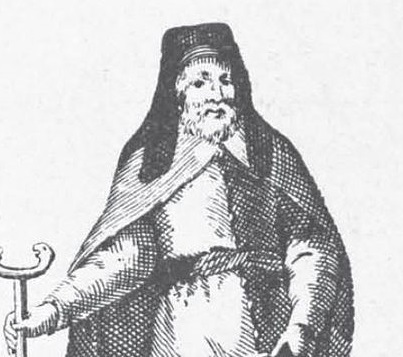
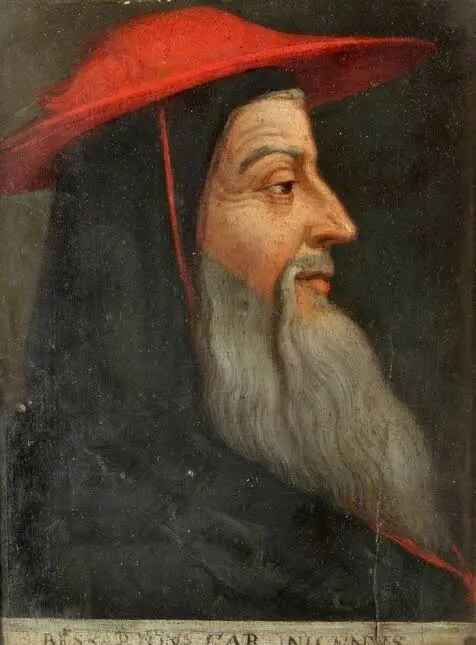
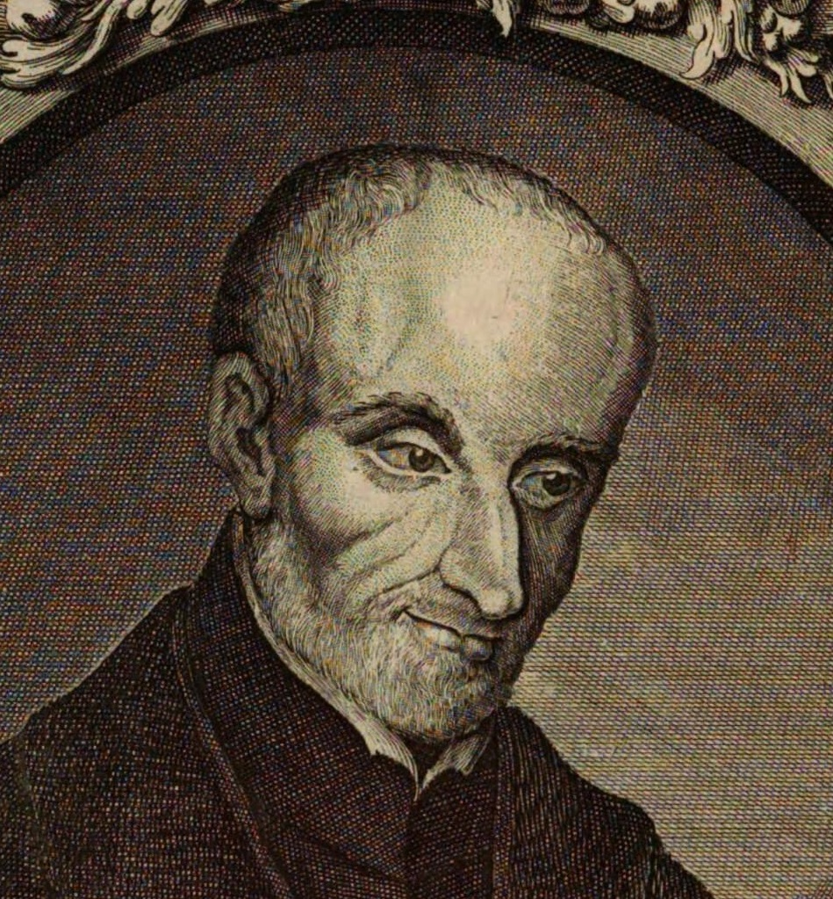
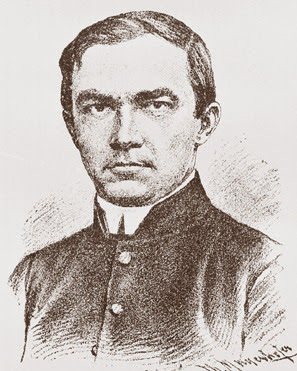
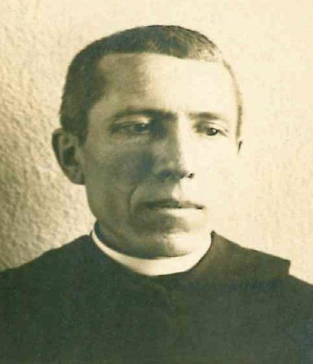

| 👤 |
Tytuł / Autor |
Wiek |
Źródła |
|

|
Apology and Epigraph / Refutation of Photius
John Bekkos -
Najznakomitszym na Wschodzie obrońcą katolickiego dogmatu o pochodzeniu Ducha Świętego był Jan Bekkos; który nauce fotiańskiej zadał śmiertelny cios. Jak wyżej widzieliśmy, Focjusz w zwalczaniu doktryny katolickiej zachował głębokie milczenie o Ojcach greckich: Bekkos niezrównanymi świadectwami wykazał, że tradycji patrystycznej sprzeciwiali się fotiańscy adwersarze, tak że po nim polemiści antykatoliccy albo pożegnali się z Focjuszem i zmuszeni zostali wymyślać nowe teorie interpretacyjne, albo uciekać się do niedorzeczności.
|
XIII w. |
Apology and Epigraph
Refutation of Photius
|
|

|
On the Procession of the Holy Spirit
Cardinal Bessarion
|
XV w. |
theunionistinitiative
|
|

|
Opus de Theologicis Dogmatibus
Denis Petavius
|
XVII w. |
Google Books
|

|
Tractatus de Deo Trino/ Examen doctrinae Macarii Bulgakow
Johann Baptist Franzelin
|
XIX w. |
Tractatus de Deo Trino
Examen doctrinae Macarii Bulgakow
|
|

|
Handbook of Dogmatic Theology
Matthias Joseph Scheeben
|
XIX w. |
Amazon
|
|
|
Dissertatio Theologica
Van der Moeren
|
XIX w. |
Google Books
|
|

|
De Processione Spiritus Sancti
Martin Jugie
|
XX w. |
Archive.org
|
|
|
Vindicating the Filioque
Thomas Crean OP
|
XXI w. |
Amazon
|
ST.I.Q36 - Św. Tomasz z Akwinu
Trzeba z kolei rozważyć to, co dotyczy Osoby Ducha Świętego. A nazywa się Go nie tylko Duchem Świętym, ale także Miłością i Darem Bożym.
Dlatego co do nazwy „Duch Święty” są cztery pytania:
1. Czy nazwa „Duch Święty” jest nazwą własną jakiejś Osoby Boskiej.
2. Czy Osoba Boska, którą nazywa się Duchem, pochodzi od Ojca i Syna.
3. Czy pochodzi od Ojca przez Syna.
4. Czy Ojciec i Syn są jedną zasadą Ducha Świętego.
Artykuł 1
Czy nazwa „Duch Święty” jest nazwą własną jakiejś Osoby Boskiej
Wydaje się, że nazwa „Duch Święty” nie jest nazwą własną żadnej Osoby Boskiej. 1. Żadna nazwa wspólna trzem Osobom nie może być nazwą własną jednej Osoby. Ale nazwa „Duch Święty” jest wspólna trzem Osobom. Hilary pokazuje bowiem w VIII księdze O Trójcy Świętej, że nazwą „Duch Boży” niekiedy oznacza się Ojca, na przykład tam, gdzie powiedziano: „Duch Pański nade mną” (Łk 4,18); innym razem Syna, na przykład gdy Syn mówi: „Ja Duchem Bożym wyrzucam demony” (Mt 12,28), wskazując, że wyrzuca demony mocą swej natury; jeszcze innym razem Ducha Świętego, na przykład tu: „wyleję Ducha mego na wszelkie ciało” (Dz 2,17). A zatem nazwa „Duch Święty” nie jest nazwą własną żadnej Osoby Boskiej.
2. Jak mówi Boecjusz w dziele O Trójcy, nazwy Osób Boskich są orzekane relacyjnie. Ale nazwa „Duch Święty” nie jest orzekana relacyjnie. A zatem nazwa ta nie jest nazwą własną Osoby Boskiej.
3. Ponieważ „Syn” jest nazwą jakiejś Osoby Boskiej, nie można o Nim mówić jako o Synu tego lub innego. Tymczasem mówi się o duchu tego lub innego człowieka. W Księdze Liczb (11,17) powiedziano bowiem: „odejmę z ducha twego i dam im”, a w Drugiej Księdze Królewskiej (2,15): „spoczął duch Eliasza na Elizeuszu”. A zatem „Duch Święty” nie jest nazwą własną żadnej Osoby Boskiej.
Przeciw temu. W Pierwszym Liście św. Jana (5,7–8) powiedziano: „Trzej są, którzy dają świadectwo na niebie: Ojciec, Słowo i Duch Święty”. A jak mówi Augustyn w VII księdze O Trójcy Świętej, na pytanie: „czym są Trzej?” odpowiadamy: „trzema Osobami”. A zatem „Duch Święty” jest nazwą Osoby Boskiej.
Odpowiedź. Chociaż w Bogu są dwa pochodzenia, to drugie z nich, które dokonuje się na sposób miłości, nie ma własnej nazwy, jak powyżej powiedziano. Dlatego też relacje, które przyjmuje się stosownie do pochodzenia, są nienazwane, o czym również powiedziano powyżej. Z tego samego powodu Osoba, która w ten sposób pochodzi, nie ma własnej nazwy. Ale jak na mocy zwyczaju językowego przystosowano pewne nazwy do tego, by oznaczały wspomniane relacje (bo nazywamy je pochodzeniem i tchnieniem, choć nazwy te w samym ich właściwym znaczeniu wydają się raczej oznaczać działania znamionujące niż relacje), tak też na oznaczenie Osoby Boskiej, która pochodzi na sposób miłości, na podstawie użycia w Piśmie przystosowano nazwę „Duch Święty”.
A że nazwa ta jest odpowiednia, można wykazać na dwa sposoby. Po pierwsze, na podstawie samej wspólności tego, którego nazywamy Duchem Świętym. Jak mówi bowiem Augustyn w XV księdze O Trójcy Świętej, „ponieważ Duch Święty jest wspólny Obu, przeto w sensie właściwym nosi tę nazwę, która przysługuje wspólnie Obu: bo i Ojciec jest duchem, i Syn jest duchem; i Ojciec jest święty, i Syn jest święty”. Po drugie zaś, na podstawie właściwego znaczenia. W rzeczach cielesnych nazwa „duch” wydaje się bowiem oznaczać pewne popchnięcie i poruszenie, ponieważ także podmuch i wiatr nazywamy duchem. A właściwością miłości jest to, że porusza i popycha ona wolę kochającego ku kochanemu. „Świętość” przypisujemy zaś tym rzeczom, które przyporządkowane są do Boga. Ponieważ więc Osoba Boska pochodzi na sposób miłości, którą Bóg kocha samego siebie, odpowiednio nazywana jest Ona Duchem Świętym.
Na zarzuty należy odpowiedzieć:
Ad 1. Samo wyrażenie „Duch Święty”, biorąc pod uwagę znaczenie obu wyrazów osobno, jest wspólne całej Trójcy. Nazwa „duch” bowiem oznacza niematerialność Bożej substancji, ponieważ cielesne tchnienie życiowe jest niewidzialne i ma w sobie niewiele z materii. Z tego powodu wszystkim substancjom niematerialnym i niewidzialnym przypisujemy tę nazwę. Mówiąc zaś „święty”, oznaczamy czystość Bożej dobroci. Jeśli natomiast wyrażenie „Duch Święty” ujmiemy jako jedno, to na podstawie użycia w Kościele zostało ono przystosowane tak, aby oznaczało jedną z trzech Osób, a mianowicie tę, która pochodzi na sposób miłości, ze względu na to, o czym już powiedziano.
Ad 2. Chociaż wyrażenie „Duch Święty” nie jest orzekane relacyjnie, to jednak używa się go na oznaczenie czegoś relacyjnego, w tej mierze, w jakiej zostało przystosowane do oznaczania Osoby odrębnej od innych jedynie przez relację. Zresztą w nazwie tej można też rozpoznać pewną relację, o ile nazwę spiritus („duch”) zrozumie się jako spiratus („tchnięty”).
Ad 3. W nazwie „Syn” poznaje się samą relację pochodzącego od zasady do zasady. W nazwie „Ojciec” poznaje się relację zasady i podobnie w nazwie „Duch”, w tej mierze, w jakiej zawiera w sobie pewną siłę poruszającą. Ale żadnemu stworzeniu nie przysługuje bycie zasadą w odniesieniu do jakiejś Osoby Boskiej, lecz raczej odwrotnie. Z tego powodu można mówić: „nasz Ojciec”, „nasz Duch”, ale nie: „nasz Syn”.
Artykuł 2
Czy Duch Święty pochodzi od Syna
Wydaje się, że Duch Święty nie pochodzi od Syna. 1. Według Dionizego „nie należy się ośmielać mówić niczego o substancjalnej boskości poza tym, co zostało nam przekazane przez Boga w Jego świętym słowie”. Ale w Piśmie Świętym nie przekazano, że Duch Święty pochodzi od Syna, lecz tylko to, że pochodzi od Ojca, jak to jasno jest powiedziane w Ewangelii według św. Jana (15,26): „Ducha Prawdy, który od Ojca pochodzi”. Duch Święty nie pochodzi więc od Syna.
2. W symbolu Soboru Konstantynopolitańskiego czytamy: „wierzymy w Ducha Świętego, Pana i Ożywiciela, pochodzącego od Ojca, któremu razem z Ojcem i Synem należy się uwielbienie i chwała”. Żadną więc miarą nie należało dodawać w naszym wyznaniu wiary, że Duch Święty pochodzi od Syna. Ci zaś, którzy dodali te słowa, najwyraźniej zasługują na anatemę.
3. Damasceńczyk powiada: „mówimy, że Duch Święty jest od Ojca i nazywamy Go Duchem Ojca. Ale nie mówimy, że Duch Święty jest od Syna, choć nazywamy Go Duchem Syna”. A zatem Duch Święty nie pochodzi od Syna.
4. Nic nie pochodzi od tego, w czym spoczywa. Tymczasem Duch Święty spoczywa w Synu. Powiedziano bowiem w legendzie o św. Andrzeju: „pokój wam i wszystkim, którzy wierzą w jednego Boga Ojca i w jednego Syna Jego, jedynego Pana naszego, Jezusa Chrystusa, i w jednego Ducha Świętego, który od Ojca pochodzi i trwa w Synu”. A zatem Duch Święty nie pochodzi od Syna.
5. Syn pochodzi jako Słowo. Ale widać, że nasz duch nie pochodzi w nas od naszego słowa. A zatem także Duch Święty nie pochodzi od Syna.
6. Duch Święty pochodzi od Ojca w sposób doskonały. A zatem zbyteczne jest mówienie, że pochodzi także od Syna.
7. „W rzeczach trwających nieustannie istnieć nie różni się od móc”, jak jest powiedziane w III księdze Fizyki. Tym bardziej więc w Bogu. Natomiast Ducha Świętego można wyodrębnić od Syna, nawet jeśli od Niego nie pochodzi. Bo w dziele O pochodzeniu Ducha Świętego Anzelm powiada: „tak Syn, jak i Duch Święty mają istnienie od Ojca, ale nie w ten sam sposób: jeden bowiem przez narodzenie, a drugi przez pochodzenie, i tym są inni od siebie nawzajem”. I po tym dodaje: „gdyby bowiem nic innego nie sprawiało, że Syn i Duch Święty nie są jedną Osobą, przez samo to byliby od siebie odmienni”. A zatem Duch Święty jest odrębny od Syna, mimo że nie posiada istnienia od Niego.
Przeciw temu. Atanazy mówi: „Duch Święty od Ojca i Syna: nie uczyniony ani stworzony, ani zrodzony, lecz pochodzący”.
Odpowiedź. Trzeba koniecznie powiedzieć, że Duch Święty jest od Syna. Gdyby bowiem nie był od Niego, to w żaden sposób nie mógłby być od Niego osobowo odrębny. Widać to jasno na podstawie tego, co powiedziano powyżej. Nie można bowiem powiedzieć, że Osoby Boskie są odrębne od siebie nawzajem stosownie do czegoś absolutnego. Wynikałoby bowiem z tego, że istota Trzech nie jest jedna. Wszystko bowiem, co orzekamy w Bogu w sposób absolutny, należy do jedności istoty. Pozostaje więc, że Osoby Boskie są od siebie odrębne jedynie przez relacje.
Ale relacje mogą stanowić o odrębności Osób tylko o tyle, o ile są relacjami przeciwstawionymi. Świadczy o tym fakt, że Ojciec posiada dwie relacje, z których jedną odnosi się do Syna, a drugą do Ducha Świętego. Ponieważ jednak relacje te nie są przeciwstawione, nie stanowią dwóch Osób, lecz obie należą tylko do jednej Osoby Ojca. Gdyby więc w Synu i w Duchu Świętym można było znaleźć tylko dwie relacje, którymi obie te Osoby odnoszą się do Ojca, wówczas relacje te nie byłyby względem siebie przeciwstawione, tak jak nie są względem siebie przeciwstawione dwie relacje, którymi Ojciec odnosi się do Nich. Wynikałoby z tego, że jak Osoba Ojca jest jedna, tak też Osoba Syna i Ducha Świętego jest jedna, ponieważ posiada dwie relacje przeciwstawione dwóm relacjom Ojca. Taki wniosek jest jednak heretycki, ponieważ burzy wiarę w Trójcę. Wobec tego Syn i Duch Święty muszą odnosić się do siebie przeciwstawionymi relacjami.
Ale – jak dowiedziono powyżej – w Bogu nie może być innych relacji przeciwstawionych niż relacje zapoczątkowania. A przeciwstawione relacje zapoczątkowania ujmujemy jako zasadę i to, co jest od zasady. Pozostaje więc powiedzieć, że koniecznie albo Syn jest od Ducha Świętego (czego wszak nikt nie twierdzi), albo Duch Święty jest od Syna, jak my wyznajemy.
Współbrzmi z tym także sposób pochodzenia obu Osób. Powiedziano bowiem powyżej, że Syn pochodzi na sposób intelektu jako Słowo, natomiast Duch Święty na sposób woli jako Miłość. Konieczne jest zaś, aby miłość pochodziła od słowa: nie kochamy bowiem czegoś, jeśli nie ujmujemy tego poczętym pojęciem w umyśle. Stąd również i to jasno pokazuje, że Duch Święty pochodzi od Syna.
Poucza nas o tym także sam porządek rzeczy. Nigdzie bowiem nie jest tak, by od jednego pochodziło wiele bez żadnego porządku, chyba tylko w rzeczach różniących się materią. Na przykład jeden rzemieślnik wytwarza wiele noży, które są odrębne od siebie materią i nie pozostają przyporządkowane do siebie nawzajem. Ale w rzeczach, w których istnieje nie tylko odrębność materialna, zawsze spotyka się w wytworzonych rzeczach pewien porządek. Stąd piękność Bożej mądrości przejawia się także w porządku uczynionych stworzeń. Jeśli więc od jednej Osoby Ojca pochodzą dwie Osoby, mianowicie Syn i Duch Święty, to musi być między Nimi jakieś przyporządkowanie. Ale nie można wskazać żadnego innego przyporządkowania prócz przyporządkowania natury, w którym jeden jest od drugiego. Zatem nie można powiedzieć, że Syn i Duch Święty pochodzą od Ojca w taki sposób, że żaden z Nich nie pochodzi od drugiego, chyba że ktoś chciałby przyjąć w nich odrębność materialną, co jest niemożliwe.
Dlatego nawet Grecy rozumieją, że pochodzenie Ducha Świętego pozostaje w jakimś przyporządkowaniu do Syna. Przyznają bowiem, że Duch Święty jest „Duchem Syna” i że jest od Ojca „przez Syna”. Podobno niektórzy z nich przyznają także, że „jest od Syna” albo „wypływa z Niego”, jednak nie przyznają, że „pochodzi”. Wydaje się, że wynika to albo z niewiedzy, albo z bezczelności. Jeśli bowiem tylko ktoś poprawnie to rozważy, dojdzie do wniosku, że nazwa „pochodzenie” jest najogólniejszą ze wszystkich, które wyrażają jakiekolwiek zapoczątkowanie. Posługujemy się nią bowiem na oznaczenie dowolnego zapoczątkowania. Mówimy na przykład, że linia pochodzi od punktu, promień ze słońca, strumień ze źródła i podobnie we wszystkich innych rzeczach. Dlatego jakiekolwiek byłoby wyrażenie dotyczące zapoczątkowania, na jego podstawie dochodzi się do wniosku, że Duch Święty pochodzi od Syna.
Na zarzuty należy odpowiedzieć:
Ad 1. Nie powinniśmy orzekać o Bogu tego, co ani co do słów, ani co do sensu nie znajduje się w Piśmie Świętym. A chociaż w Piśmie Świętym co do słów nie ma mowy o tym, że Duch Święty pochodzi od Syna, jednak jest to wyrażone co do sensu – zwłaszcza tam, gdzie w Ewangelii według św. Jana (16,14) Syn mówi o Duchu Świętym: „On mnie uwielbi, albowiem z mego weźmie”. Należy również przyjąć jako regułę, że to, co w Piśmie Świętym mówi się o Ojcu, należy rozumieć także o Synu, nawet jeśli dodano jakieś wyrażenie wykluczające, z wyjątkiem jedynie tego, w czym Ojciec i Syn są od siebie odrębni przez przeciwstawione relacje. Gdy bowiem w Ewangelii według św. Mateusza (11,27) Pan mówi: „nikt nie zna Syna, tylko Ojciec”, nie wyklucza przez to, że Syn poznaje samego siebie. Tak więc gdy mówi się, że Duch Święty pochodzi od Ojca – nawet gdyby dodano, że tylko od Ojca – nie wyklucza się przez to Syna, ponieważ w byciu zasadą Ducha Świętego Ojciec i Syn nie są sobie przeciwstawieni, lecz są sobie przeciwstawieni jedynie w tym, że ten jest Ojcem, a tamten Synem.
Ad 2. Na każdym soborze przyjmowano jakiś symbol z uwagi na określony błąd, który na tym soborze potępiano. Dlatego każdy kolejny sobór nie tworzył innego symbolu od poprzedniego, a tylko w obliczu powstających herezji przez pewne dodatki jaśniej wykładał to, co domyślnie zawarte było w pierwszym symbolu. Dlatego w postanowieniu Soboru Chalcedońskiego jest powiedziane, że ci, którzy zebrali się na Soborze Konstantynopolitańskim, przekazali nauczanie o Duchu Świętym „nie w tym sensie, że u wcześniejszych”, czyli zebranych w Nicei, „czegoś brakowało, ale wyjaśniając przeciw heretykom, jak należy to rozumieć”. Ponieważ więc w czasach dawnych soborów nie powstał jeszcze błąd tych, którzy mówią, że Duch Święty nie pochodzi od Syna, nie było konieczne, aby stwierdzać to otwarcie. Później zaś, gdy niektórzy zaczęli głosić ten błąd, na pewnym soborze zebranym na ziemiach zachodnich wyrażono to mocą autorytetu biskupa Rzymu – tego samego autorytetu, na mocy którego również w dawnych czasach zwoływano sobory i zatwierdzano je. Lecz było to zawarte domyślnie już w samym stwierdzeniu, że Duch Święty pochodzi od Ojca.
Ad 3. Twierdzenie, że Duch Święty nie pochodzi od Syna, jako pierwsi wprowadzili nestorianie, o czym świadczy pewne nestoriańskie wyznanie wiary, potępione na Soborze Efeskim. Za tym błędem poszedł nestorianin Teodoret i wielu po nim, a wśród nich także Damasceńczyk. Dlatego pod tym względem jego stanowisko nie może się ostać. Są jednak i tacy, którzy – opierając się na znaczeniu przytoczonych słów – mówią, że Damasceńczyk wprawdzie nie wyznaje, że Duch Święty pochodzi od Syna, ale też temu nie zaprzecza.
Ad 4. Mówiąc, że Duch Święty spoczywa lub trwa w Synu, nie wyklucza się tego, że od Niego pochodzi. Mówi się bowiem, że Syn trwa w Ojcu, mimo że pochodzi od Ojca. O Duchu Świętym mówi się również, że spoczywa w Synu: albo tak, jak miłość spoczywa w kochanym, albo w odniesieniu do ludzkiej natury Chrystusa. W Ewangelii według św. Jana (1,33) powiedziano bowiem: „na którego ujrzysz zstępującego Ducha i na nim pozostającego, ten jest, który chrzci”.
Ad 5. Słowo w Bogu ujmujemy nie przez podobieństwo do słowa wypowiedzianego na głos, z którego duch nie pochodzi – wówczas można by bowiem mówić o Słowie tylko metaforycznie – ale przez podobieństwo do słowa umysłowego, od którego pochodzi miłość.
Ad 6. Fakt, że Duch Święty pochodzi od Ojca w sposób doskonały, nie tylko nie czyni czymś zbytecznym stwierdzenia, iż Duch Święty pochodzi od Syna, ale czyni je wręcz koniecznym. Jedna jest bowiem moc Ojca i Syna. I cokolwiek jest od Ojca, musi być również od Syna, o ile tylko nie sprzeciwia się właściwości synostwa. Syn nie jest bowiem od samego siebie, chociaż jest od Ojca.
Ad 7. Duch Święty jest osobowo odrębny od Syna przez to, że zapoczątkowanie jednego jest odrębne od zapoczątkowania drugiego. Sama zaś różnica zapoczątkowania zachodzi przez to, że Syn jest od samego Ojca, a Duch Święty od Ojca i Syna. W przeciwnym bowiem razie – jak wykazano powyżej – pochodzenia nie byłyby odrębne.
Artykuł 3
Czy Duch Święty pochodzi od Ojca przez Syna
Wydaje się, że Duch Święty nie pochodzi od Ojca przez Syna. 1. To, co pochodzi od kogoś przez kogoś innego, nie pochodzi od niego bezpośrednio. Jeśli więc Duch Święty pochodzi od Ojca przez Syna, to nie pochodzi od Ojca bezpośrednio. A to wydaje się nieodpowiednie.
2. Jeśli Duch Święty pochodzi od Ojca przez Syna, to pochodzi od Syna tylko ze względu na Ojca. Ale „to, ze względu na co jakaś rzecz jest czymś, samo jest tym w większym stopniu”. A zatem Duch Święty pochodzi od Ojca w większym stopniu niż od Syna.
3. Syn posiada istnienie przez zrodzenie. Jeśli więc Duch Święty jest od Ojca przez Syna, to wynika z tego, że najpierw rodzi się Syn, a potem pochodzi Duch Święty. A wobec tego pochodzenie Ducha Świętego nie jest wieczne. Ale taki wniosek jest heretycki.
4. Kiedy mówi się, że ktoś działa przez kogoś innego, to można odwrócić takie stwierdzenie. Jak bowiem mówi się, że król działa przez zarządcę, tak można też powiedzieć, że zarządca działa przez króla. Ale w żaden sposób nie mówi się, że Syn tchnie Ducha Świętego przez Ojca. A zatem w żaden sposób nie można powiedzieć, że Ojciec tchnie Ducha Świętego przez Syna.
Przeciw temu. Hilary mówi w dziele O Trójcy Świętej: „zachowaj, proszę, we mnie tę niewzruszoną wiarę, abym zawsze otrzymywał Ojca, to jest Ciebie; i abym wraz z Tobą uwielbiał Twojego Syna; i abym zasłużył na Twojego Ducha Świętego, który jest przez Twojego Jednorodzonego”.
Odpowiedź. W każdej wypowiedzi, w której mówi się, że ktoś działa przez kogoś innego, przyimek „przez” wskazuje na sens przyczynowania jakiejś przyczyny lub zasady tego działania. Ale ponieważ działanie jest czymś pośrednim między czyniącym a tym, co uczynione, niekiedy ten sens przyczynowania, z którym łączy się przysłówek „przez”, odnosi się do przyczyny działania stosownie do tego, że wychodzi ono od działającego. I wtedy jest przyczyną działania działającego: czy to jako przyczyna celowa, czy formalna, czy sprawcza, czyli poruszająca. Jako przyczyna celowa, jeśli powiemy na przykład, że twórca działa przez żądzę zysku; jako formalna, jeśli powiemy, że działa przez swoją sztukę; jako poruszająca zaś, jeśli powiemy, że działa przez nakaz kogoś innego. Kiedy indziej wyrażenie zawierające sens przyczynowania, z którym łączy się przyimek „przez”, jest przyczyną działania ujętego jako posiadające swój kres w czymś uczynionym. Na przykład kiedy mówimy: „twórca działa przez młot” – nie oznacza to bowiem, że młot jest dla twórcy przyczyną tego, że działa, ale że jest on przyczyną wytworu sztuki jako pochodzącego od twórcy oraz że zawdzięcza to twórcy. I to właśnie mają na myśli ci, którzy mówią, że przyimek „przez” niekiedy oznacza sprawczość w znaczeniu bezpośrednim – na przykład kiedy mówi się, że król działa przez zarządcę; kiedy indziej zaś w znaczeniu pośrednim – na przykład kiedy mówi się, że zarządca działa przez króla.
Ponieważ więc Syn ma od Ojca to, że pochodzi od Niego Duch Święty, można powiedzieć, że Ojciec tchnie Ducha Świętego przez Syna albo że Duch Święty pochodzi od Ojca przez Syna, co wychodzi na jedno.
Na zarzuty należy odpowiedzieć:
Ad 1. W każdym działaniu można rozpatrywać dwie rzeczy: podmiot działający i moc, którą on działa. Na przykład ogień ogrzewa swoim gorącem. Jeśli więc w Ojcu i Synu rozpatruje się moc, którą tchną Ducha Świętego, to w ich działaniu nie ma niczego pośredniego, ponieważ ta moc jest jedna i ta sama. Jeżeli natomiast rozpatruje się same Osoby tchnące, to skoro Duch Święty pochodzi wspólnie od Ojca i Syna, to okazuje się, że Duch Święty pochodzi od Ojca bezpośrednio, gdyż jest od Niego, oraz pośrednio, gdyż jest od Syna. I w ten sposób mówi się, że pochodzi od Ojca przez Syna. Podobnie i Abel pochodził bezpośrednio od Adama przez to, że Adam był jego ojcem, a zarazem pochodził od niego pośrednio przez to, że jego matką była Ewa, która pochodziła od Adama – chociaż ten przykład pochodzenia materialnego nie może oczywiście wyrazić niematerialnego pochodzenia Osób Boskich.
Ad 2. Gdyby Syn otrzymywał od Ojca inną liczbowo moc tchnięcia Ducha Świętego, wynikałoby z tego, że jest jak gdyby przyczyną drugą i narzędziową, a w ten sposób Duch Święty pochodziłby od Ojca w większym stopniu niż od Syna. Tymczasem w Ojcu i w Synu jest jedna i ta sama liczbowo moc tchnięcia Ducha Świętego i z tego powodu pochodzi On na równi od Obydwu. Mimo to mówi się niekiedy, że zasadniczo albo w sensie właściwym pochodzi On od Ojca, ponieważ Syn otrzymuje tę moc od Ojca.
Ad 3. Jak rodzenie Syna jest współwieczne z Rodzącym – a zatem Ojciec nie istniał wcześniej, nim zrodził Syna – tak pochodzenie Ducha Świętego jest współwieczne ze swoją zasadą. Dlatego Syn nie był zrodzony wcześniej, nim pochodził Duch Święty, ale jedno i drugie pochodzenie jest wieczne.
Ad 4. Kiedy mówi się, że ktoś działa przez coś, nie zawsze możliwe jest odwrócenie, gdyż nie mówimy na przykład, że młot działa przez rzemieślnika. Mówimy zaś, że zarządca działa przez króla, ponieważ do natury zarządcy należy działanie, jako że jest on panem swoich czynów. Tymczasem do natury młota nie należy działanie, a tylko podleganie działaniu. Stąd mówimy o nim tylko jako o narzędziu. Mówi się zaś, że zarządca działa przez króla, mimo że przyimek „przez” oznacza jakiegoś pośrednika. A to dlatego, że im wcześniejszy jest dany podmiot w działaniu, tym bardziej bezpośrednio jego moc oddziałuje na skutek tego działania. Tym bowiem, co łączy przyczynę drugą z jej skutkiem, jest moc pierwszej przyczyny. Stąd w naukach opartych na dowodzeniu pierwsze zasady nazywa się też bezpośrednimi. W tej więc mierze, w jakiej zarządca zajmuje miejsce pośrednie w porządku podmiotów działających, mówi się, że król działa przez zarządcę; natomiast zgodnie z porządkiem mocy mówimy, że zarządca działa przez króla, ponieważ moc króla sprawia, że działanie zarządcy osiąga swój skutek. Tymczasem między Ojcem i Synem nie zachodzi porządek mocy, a tylko porządek podmiotów. I z tego powodu mówi się, że Ojciec tchnie przez Syna, a nie na odwrót.
Artykuł 4
Czy Ojciec i Syn są jedną zasadą Ducha Świętego
Wydaje się, że Ojciec i Syn nie są jedną zasadą Ducha Świętego. 1. Wydaje się, że Duch Święty nie pochodzi od Ojca i Syna, o ile są jednym: ani co do natury, gdyż wówczas Duch Święty musiałby pochodzić także sam od siebie, skoro jest z Nimi jednym w naturze; ani co do jakiejś właściwości, ponieważ jest oczywiste, że jedna właściwość nie może przysługiwać dwóm podmiotom. Duch Święty pochodzi więc od Ojca i Syna jako od wielu. A zatem Ojciec i Syn nie są jedną zasadą Ducha Świętego.
2. Kiedy mówi się: „Ojciec i Syn są jedną zasadą Ducha Świętego”, zdanie to nie może wskazywać na jedność osobową, gdyż wtedy Ojciec i Syn byliby jedną Osobą. Ale nie może także wskazywać na jedność właściwości. Jeśli bowiem ze względu na jedną właściwość Ojciec i Syn są jedną zasadą Ducha Świętego, to na tej samej zasadzie ze względu na dwie właściwości Ojciec musiałby być dwiema zasadami: Syna i Ducha Świętego. Ale taki wniosek jest nieodpowiedni. A zatem Ojciec i Syn nie są jedną zasadą Ducha Świętego.
3. Syn nie bardziej jest zgodny z Ojcem niż Duch Święty. Ale Duch Święty i Ojciec nie są jedną zasadą dla żadnej Osoby Boskiej. A zatem również Ojciec i Syn nie są jedną zasadą dla żadnej Osoby Boskiej.
4. Jeśli Ojciec i Syn są jedną zasadą Ducha Świętego, to są albo jedną zasadą, która jest Ojcem, albo jedną zasadą, która nie jest Ojcem. Ale oba te wnioski są nie do przyjęcia. Jeśli bowiem są jedną zasadą, która jest Ojcem, to wynika z tego, że Syn jest Ojcem; a jeśli są jedną zasadą, która nie jest Ojcem, to wynika z tego, że Ojciec nie jest Ojcem. Nie należy więc mówić, że Ojciec i Syn są jedną zasadą Ducha Świętego.
5. Jeśli Ojciec i Syn są jedną zasadą Ducha Świętego, to – jak się wydaje – trzeba też powiedzieć, odwrotnie, że jedna zasada Ducha Świętego jest Ojcem i Synem. Ale takie zdanie wydaje się fałszem, ponieważ słowem „zasada” trzeba zastąpić albo Osobę Ojca, albo Osobę Syna. A w obu tych przypadkach zdanie jest fałszywe. A zatem fałszywe jest również zdanie: „Ojciec i Syn są jedną zasadą Ducha Świętego”.
6. Jedność co do substancji jest przyczyną identyczności. Jeśli więc Ojciec i Syn są jedną zasadą Ducha Świętego, to wynika z tego, że są zasadą identyczną. Ale temu wielu zaprzecza. A zatem nie należy przyznawać, że Ojciec i Syn są jedną zasadą Ducha Świętego.
7. Mówi się, że Ojciec, Syn i Duch Święty są jednym Stwórcą, ponieważ są jedną zasadą stworzenia. Ale – jak mówi wielu – Ojciec i Syn nie są jednym wykonawcą tchnienia, lecz dwoma wykonawcami. Współbrzmi to również ze słowami Hilarego, który w II księdze O Trójcy Świętej mówi o Duchu Świętym: „należy wyznawać, że jest od Ojca i Syna jako sprawców”. A zatem Ojciec i Syn nie są jedną zasadą Ducha Świętego.
Przeciw temu. Augustyn w V księdze O Trójcy Świętej mówi, że Ojciec i Syn nie są dwiema zasadami, ale jedną zasadą Ducha Świętego.
Odpowiedź. Ojciec i Syn są jednym we wszystkim, w czym przeciwstawienie relacji nie wprowadza między Nimi odrębności. A ponieważ w tym, że są zasadą Ducha Świętego, nie są sobie przeciwstawieni relacyjnie, to wynika z tego, że Ojciec i Syn są jedną zasadą Ducha Świętego.
Niektórzy mówią jednak, że zdanie: „Ojciec i Syn są jedną zasadą Ducha Świętego” jest niewłaściwe. Twierdzą bowiem, że ponieważ nazwa „zasada” użyta w liczbie pojedynczej nie oznacza osoby, ale właściwość, to posiada znaczenie przymiotnikowe. A ponieważ przymiotnik nie jest określany przez przymiotnik, nie można poprawnie powiedzieć, że Ojciec i Syn są jedną zasadą Ducha Świętego. Chyba że „jedno” rozumieć w znaczeniu przysłówkowym, tak że wyrażenie: „są jedną zasadą” będzie znaczyło: „są zasadą w jeden sposób”. Ale tak samo można byłoby powiedzieć, że Ojciec jest dwiema zasadami Syna i Ducha Świętego, to znaczy że jest On zasadą na dwa sposoby. Dlatego należy powiedzieć, że chociaż nazwa „zasada” oznacza właściwość, to jednak oznacza ją na sposób rzeczownikowy, tak jak nazwa „ojciec” albo „syn” w rzeczach stworzonych. Dlatego otrzymuje liczbę od formy oznaczanej, podobnie jak inne rzeczowniki. Jak bowiem Ojciec i Syn są jednym Bogiem ze względu na jedność formy oznaczanej przez nazwę „Bóg”, tak też są jedną zasadą Ducha Świętego ze względu na jedność właściwości oznaczanej przez nazwę „zasada”.
Na zarzuty należy odpowiedzieć:
Ad 1. Jeśli weźmiemy pod uwagę moc tchnienia, Duch Święty pochodzi od Ojca i Syna, o ile są jednym w mocy tchnienia, co w pewien sposób oznacza naturę wraz z właściwością, o czym zostanie powiedziane poniżej. I nie ma nic nieodpowiedniego w tym, że jedna właściwość przysługuje dwóm podmiotom, które mają jedną naturę. Natomiast jeśli weźmiemy pod uwagę podmioty tchnienia, to Duch Święty pochodzi od Ojca i Syna jako wielu. Pochodzi bowiem od Nich jako miłość jednocząca Dwóch.
Ad 2. Kiedy mówi się: „Ojciec i Syn są jedną zasadą Ducha Świętego”, zdanie to wskazuje na jedną właściwość, którą jest forma oznaczana przez nazwę. Nie wynika z tego jednak, że ze względu na wiele właściwości można powiedzieć o Ojcu, że jest wieloma zasadami, ponieważ implikowałoby to wielość podmiotów.
Ad 3. Podobieństwo i niepodobieństwo rozpatrujemy w Bogu nie na podstawie właściwości relacyjnych, ale na podstawie istoty. Dlatego jak Ojciec nie jest bardziej podobny do samego siebie niż do Syna, tak również Syn nie jest bardziej podobny do Ojca niż Duch Święty.
Ad 4. Te dwa zdania: „Ojciec i Syn są jedną zasadą, która jest Ojcem” i „Ojciec i Syn są jedną zasadą, która nie jest Ojcem” nie są sobie przeciwstawione jako sprzeczne, toteż nie jest konieczne przyjęcie jednego z dwojga. Kiedy mówimy bowiem: „Ojciec i Syn są jedną zasadą”, wyraz „zasada” nie ma określonego zastępowania, ale zastępuje w sposób nieokreślony dwie Osoby jednocześnie. Stąd w przejściu od zastępowania nieokreślonego do określonego zachodzi tu błąd logiczny figury wypowiedzi.
Ad 5. Zdanie: „jedna zasada Ducha Świętego jest Ojcem i Synem” także jest prawdziwe. Jak powiedziano, gdy mówi się „zasada”, to zastępuje się nie tylko jedną Osobę, ale dwie Osoby bez odrębności.
Ad 6. Można powiedzieć w sposób odpowiedni, że Ojciec i Syn są tą samą zasadą, w tej mierze, w jakiej wyraz „zasada” zastępuje w sposób nieokreślony i bez odrębności dwie Osoby jednocześnie.
Ad 7. Niektórzy mówią, że Ojciec i Syn, mimo że są jedną zasadą Ducha Świętego, są dwoma wykonawcami tchnienia ze względu na odrębność podmiotów, tak jak dwoma tchnącymi, ponieważ działania odnosi się do podmiotów. Inaczej jest natomiast w przypadku nazwy „Stwórca”. Duch Święty bowiem – jak powiedziano – pochodzi od Ojca i Syna jako dwóch odrębnych Osób, podczas gdy stworzenie nie pochodzi od trzech Osób jako odrębnych, ale od trzech Osób jako będących jednym w istocie. Wydaje się jednak, że lepiej będzie powiedzieć inaczej: skoro „tchnący” jest przymiotnikiem, a „wykonawca tchnienia” rzeczownikiem, to możemy powiedzieć, że Ojciec i Syn są dwoma tchnącymi ze względu na wielość podmiotów, ale nie są dwoma wykonawcami tchnienia ze względu na to, że tchnienie jest jedno. Nazwy przymiotnikowe biorą bowiem liczbę od podmiotów, rzeczownikowe zaś mają liczbę same z siebie, zgodnie z formą oznaczaną. A to, co mówi Hilary, że Duch Święty jest „od Ojca i Syna jako sprawców”, należy wyjaśnić w ten sposób, że używa on tutaj rzeczownika w znaczeniu przymiotnikowym.
Introduction to the Summa Theologiae - John of St. Thomas
To avoid both these heresies the Catholic faith holds
that the distinction of Persons does not come about in what is
absolute and essential, but according to real opposed rela
tions. Among oppositions only relative opposites can be
found without imperfection or division of nature in God, as
Saint Thomas teaches in the Disputed Question on the Power of
God
(q. 7, a. 8, ad 4)
Other oppositions come about by remov
ing something or by positing something in the substance to
which they belong, and come about by way of negation and
affirmation. Only relative opposition comes about by a refer
ence tending to the opposite term without removing it, and
thus it does not ground a division in being, but in respect. In
God, everything is one save the opposition of relation.
If one wishes these relations to be real they must presup
pose a real foundation. Without a real foundation, there are
no real relations. A real relation or respect in God can only be
grounded in some procession, or communicative origin of
nature which is not divisive of it. Every other relation,
grounded on any other basis, presupposes and does not cause
distinct extremes. Origin or procession, however, produces
the extremes and their relation. In God, antecedently to rela
tions, there cannot be supposed distinct extremes between
which the relation is exercised, because whatever is
antecedent to relation is absolute and consequently not dis
tinct but one. So only procession of origin can found real rela
tions, not presupposing them as distinct prior to these rela
tions, but made distinct by the relation which constitutes
them: such relations are substantial and not accidental.
Therefore he treats the divine processions as the foundations
of relations within [the deity] in q. 27, and of the relations
themselves in q. 28.
Summa Theologiae, Prima Pars with the Commentary of Cardinal Cajetan: Volume 2 On the Holy Trinity and Creation in General Q 36
Re the title question, bear in mind that this article
really covers two issues:
(1) whether the Holy Spirit proceeds from the Son,
(2) whether He would still be a distinct Person from
the Son if He did not proceed from the Son.
Of these, (1) is debated between Greeks and Latins,
while (2) is debated among the Latins themselves.
ii. So a doubt arises right away. The questions ask-
ed in articles of this Summa are numerically equal to
the issues we know about; but the question raised in
this article is one, while the issues known about are
two, as is obvious from the body of the article.
iii. Also, this makes things especially awkward for
me, writing a commentary article-by-article, because
my job is to discuss each issue, one at a time.
iv. There are two ways to go about answering this:
c 1; v. (1) Posterior Analytics II says that asking whe-
90a 6/ ther the moon gets eclipsed is the same as asking if
there is a reason for lunar eclipses. So asking whe-
ther the Holy Spirit proceeds from the Son is the
same as asking if there is a reason for His proceeding
from the Son. In either case, the question is optimally
answered with the combination of ‘it is the case’ and
‘for such-and-such a reason it is the case’. So there is
no fault to be found with this article. In answering
the title-question, what is implicit in it gets explica-
ted. There was no need to divide the point asked and
the explanation of its answer into two articles; other-
wise, one would need to divide every article into two.
vi. (2) Every time a question is raised about a point
knowable, one implicitly understands the question to
contain the words ‘per se’ and ‘as such’. So the in-
tent of the present article is not to discuss the Holy
Spirit’s procession in any way but per se. The inten-
ded sense of ‘Does the Holy Spirit proceed from the
Son?’ is ‘Does it enter into the distinctive explana-
tion of the Holy Spirit’s Person that He proceeds from
the Son?’ For what applies to x per se applies to x
thanks to its own unique account. To answer this ques-
tion affirmatively, then, one must show not only that
the Holy Spirit does proceed from the Son but also that
He does so by virtue of His personal distinctive trait or
“form”; otherwise, one would not be showing that the
Holy Spirit proceeds this way because He is the Holy
Spirit.
vii. To see the matter more clearly still, you need to
realize that the description,
‘necessarily produced by more than one divine
Person’
can be true about a product in two ways: (1) for a rea-
son having to do with the producer, and (2) for a rea-
son having to do with the product. As an example of
(1), you have the production of creatures by God. Cre-
ation is “necessarily produced by three divine Persons”
because the Trinity’s works ad extra are not separately
attributed; the reason has nothing to do with the pro-
duct, because a creature could be produced and be as it
is, even if it were produced by the Father alone. There
would only be an example of (2) in case the creature
would be deprived of its own formal constitutive trait
if it did not come from more than one Person.
In the case at hand, the Holy Spirit proceeds ne-
cessarily from the Father and the Son. Everybody
agrees that this is for a reason having to do with the
producer, because everything of the Father’s that does
not conflict with the Son is necessarily shared with the
Son. But whether the Holy Spirit proceeds necessarily
from the Son for a reason having to do with the prod-
uct — that is in dispute. For among the descriptions
applying to the product, some apply on a basis intrinsic
to it [per se], and others apply on a basis incidental (or
quasi-incidental) to it. Strictly speaking, therefore, the
question being posed is whether the Holy Spirit has the trait of proceeding from the Son because of a constitutive and distinctive feature of the Spirit.
Analysis of the article, I
viii. In the body of the article, Aquinas does two jobs: (1) he answers the question, and (2) he argues against the Greeks.
ix. As to job (1), a single conclusion answers the question in the affirmative: Necessarily, the Holy Spirit proceeds from the Son. This is supported by three arguments.
First argument
The first goes thus. [
Antecedent:] If the Holy Spirit were not from the Son, He could not be distinguished from the Son as a Person — a claim whose consequent is supported on the ground that divine Persons are not distinguished from one another by anything absolute but only by opposed relations of origin, according as
x is source of
y, or
y is from
x. Ergo [
inference:] if the Holy Spirit did not have such a relation of origin-from-the-Son, He would not be distinguished from Him as another Person.
The antecedent is supported in all its parts [about how divine Persons are distinguished], one by one. The first part (that divine Persons are not distinguished by anything absolute) rests on the ground that [if they were,] the oneness of their essence would be taken away, in that every absolute [i. e. non-relational] trait is in their essence. The second part (that divine Persons are distinguished only by relations) follows obviously from the first part. The third (that they are distinguished by opposed relations) is made evident by the fact that, in the one Person of the Father, there are two relations, but they do not make Him two Persons because they are not relatively opposed. The fourth part (that they are distinguished by relations of origin) rests on the fact that, in terms of relations proper, the only opposed relations there can be in God are those of origin. The fifth (that the relations of origin are as
x is source of
y and as
y is from
x) follows obviously from the preceding statements.
Drawing the inference is then supported by the fact that, so long as the antecedent stands, either the Son proceeds from the Holy Spirit, or else the reverse. No one alleges the former: so, it must be the case that the Holy Spirit proceeds from the Son.
Attack by Scotus
x. Concerning the conditional assumed here as the argument’s antecedent, and concerning the support given for it, doubt arises from Scotus’ remarks on
I Sent. d.11, q.2, in which he holds the opposite view. Along four lines, he attacks the foundation of Aquinas’ position, namely, that only relative opposition yields thing-from-thing distinction within God.
rationes [bullet]
First line of attack. [
Major:] A difference between real formal factors* which are incompossible in the same referent† yields thing-wise distinction
suppositum wherever it is found.¹ [
Minor:] Two total ways of receiving the same nature,
i.e. by birth and by procession, are different in the way stated, even within the divine reality. [
Conclusion:] Relative opposition is not the only thing that distinguishes divine Persons.
xi. In this same vein, Scotus breaks down the support which this article draws from the two relations in the Father. He says active cases of producing need a different account from passive cases of being-produced. An active producer can give being to many, but one passively produced cannot receive being many times (unless, perhaps, it failed at first).
Aureol chimes in
As far as being-produced is concerned, this line of attack is confirmed by Aureol’s arguments at
I Sent. d.11, q.1, a.1. The arguments amount to this. [
Antecedent: 1st part:] To-be-generated and to-be-spirated are impossible in the same referent; [
2nd part:] even if spirating is conjoined to [the Son’s] very act of being-generated. Hence [
inference:] they are thing-wise distinct of themselves. The inference is obvious, and the first part of the antecedent is self-evident. Its second part, however, is supported on three grounds.
[bullet] First, any trait of a thing in God fits it form-wise and of-itself; so the incompossibility of those traits applies of itself. Confirmation: the incompossibility arises from the ordering whereby the one procession presupposes the other. But ordering arises from all form-wise traits. So the traits are first-off incompossible of themselves.
[bullet] Second, if the incompossibility came from the conjunction of being-generated with spirating, in what line of causality would spirating yield this incompossibility? Not in the line of efficient or final causality, obviously; nor in that of formal causality, because then it would follow that being-generated and being-spirated are form-wise the same.
[bullet] Third, because if the incompossibility arose from this [conjunction], it would either be because being-generated and spirating are thing-wise identical, or because both apply to the Son simultaneously, or because one is previous to the other: but no such [causal] claims can be made, because the [alleged] causes all apply to spirating itself
vis-à-vis the divine essence, in which they obviously yield no incompossibility with being spirated.²
Scotus resumed
xii. [bullet]
Second line of attack. If (impossible as it may be) active spirating were not in the Father but only in the Son, there would still be a Trinity of Persons. Ergo, there does not have to be relative opposition between the Holy Spirit and a Person [in this case, the Father] from whom He is distinguished — and thus Aquinas's whole reasoning process tumbles to the ground.
1 In other words, if (x) ~◊(φx & ψx),
so that one and the same individual in one and the same possible world cannot be
both φ and ψ, then (φx & ψy)
⊃ (x ≠ y) in that world.
² In section xvi below, Cajetan will attack all three of these grounds. But his main move will be to reject the first part of Aureol’s antecedent: being-generated and being-spirated are not so incompossible as Aureol and Scotus supposed.
xiii. • The third line of attack comes from what constitutes the Son. [Antecedent:] The Son is constituted in personal being [i.e. in being who He is] by sonship; [1st inference:] therefore de facto He is distinguished from the Holy Spirit by sonship; so [2nd inference:] when active spiration is separated from the Son in thought, there still remains that whereby the Son is personally distinct from the Holy Spirit; therefore [relative opposition is not required] etc. — Drawing the first inference is supported by the fully general principle that what constitutes a thing is the same as what distinguishes it from others, as one sees from Porphyry, and as one learns case-by-case.
xiv. • The fourth line of attack goes in reverse, from what distinguishes the Son personally to what constitutes Him. [Antecedent:] The Son is distinguished as a Person from the Holy Spirit; so [1st inference:] the Son is distinguished [from the Spirit] by His defining makeup as a Person; so [2nd inference:] He is not distinguished by active spiration; ergo [3rd inference:] with active spiration set aside, there would still remain a personal distinction between the Son and the Holy Spirit. — Drawing the first inference is supported by induction and by argument. By induction because [Scotus says] the following [inference schemata] are valid:
A makes B distinct thing-wise [realiter]
∴ A belongs to what accounts for B as a thing;
A makes B distinct essence-wise
∴ A belongs to what accounts for B's essence;
A makes B distinct reference-wise [suppositaliter]
∴ A belongs to what accounts for B as a referent;
A makes B distinct relatively
∴ A belongs to what accounts for B as a relatum;
etc.
By argument, because if distinction between persons could be brought about by something that did not belong to the defining makeup of a person, then [although Christ's humanity does not belong to the account defining His person, it could still make a person distinct from Him, and] one could no longer sustain the [orthodox] claim that Christ's humanity is not another person from the Word; for I might say that the humanity is a distinct person thanks to some factor which nevertheless does not constitute His person.
Aureol concurs again
This line of attack from the personal distinctive is also confirmed by Aureol's remarks at the place cited, a. 2. as follows. [Antecedent:] Suppose [active] spirating made the Son another Person from the Holy Spirit; then [consequence:] the Father and the Son would be one Person. But this is false. Ergo [active spiration is not what makes them distinct Persons]. — Drawing the consequence is supported thus. [Antecedent:] Spiration distinguishes Father-and-Son (as one Spirator) from the Holy Spirit, and of itself it distinguishes them person-wise; ergo [inference:] being one Spirator is being one Person; and if the Spirator is not one Person, then spiration does not distinguish person-from-person. — This reasoning process is based upon the following fully general principle: every factor which is formally one factor but distinguishes many [say, {x, y}] from something else [say, z] posits in those many some one basis for that distinction, proportionate thereto.
First argument defended:
The foundations
xv. TO CLEAR UP this muddle (which I will follow the custom of discussing here, even though handling the constitutive traits of the Persons properly pertains to q. 40), you need to know this: nothing is form-wise present in the divine reality except substance and relation; but the substance, as common to the Hypostases, neither constitutes nor distinguishes them; hence both jobs have to go to relation. But a job can belong to a relation in two ways:
(1) thanks to what is distinctive to a relation, or
(2) thanks to what is common to relations and [non-relations, i.e.] absolute traits;
so [we have to add that] any jobs given to divine relations belong to them just insofar as they are relations. Thus the jobs of constituting and distinguishing [the Hypostases] belong to a divine relation precisely as it is a relational factor.
Now, between a constitutive factor that is relational and one that is absolute, there is this difference]: an absolute factor constitutes a thing in itself, while a relational factor constitutes a thing towards another. And since how each thing is "one" and "distinct" is how it is "a being," how an absolute constitutive trait of x distinguishes x is how it makes x a being, i.e. it distinguishes x in itself and so distinguishes x from every other thing; but a constitutive trait of x in relative being, since it makes x a being towards another one, a correlative one, distinguishes x only from that one. Otherwise, x's otherness or distinctness would not be a proportionate result in x; its constitutive factor would do more in distinguishing x than it did in constituting x — which seems unintelligible.
So then: IF relation is the only factor within the divine reality that raises the count to Three, and relation does not do this on an incidental basis but precisely as a relational factor, and a relational factor as such constitutes [x only as towards y] and distinguishes [x] only relatively [from y] (for any other distinctness it gives x is not one it yields as a relative factor but would come from traits it has in common with absolute factors, as one sees clearly in the case of "diversity," which is not unique to relations and so cannot be caused by a relation thanks to just its makeup as a relation), THEN the consequence is that there is no thing-from-thing distinction within God except relative distinction. And
since it is well established that relative distinction
does not exist without relative opposition, which is
only opposition to the correlative, it follows transpa-
rently that only relative opposition distinguishes
divine Persons as thing-from-thing.
Not paying attention to this, or not getting to the
bottom of it, is what has caused disagreement in this
area. For if our critics had paid attention to the fact
that the Church's Tradition, in teaching us "oneness
of substance and threeness of relational things," is
implying by its formal manner of speaking that this
formula is to be understood form-wise, they would
have seen right away that:
(1) no distinction is being given to us by the
Tradition but a distinction of relational things,
(2) that this is and must be the distinction proper
to relational things qua relational,
(3) that these points cannot be salvaged so long as
they say that the distinct things are indeed relational
but are nevertheless distinguished without relative op-
position, because they are just "disparate" and "in-
compossible," etc. For as we said above, being dis-
parate and being incompossible are common [to every
category], not unique to relative things.
Against the 1st, 3rd, and 4th lines of attack
From these points one gets an answer to objections
drawn from what constitutes the Son; when one says
the same trait both constitutes x and distin-
guishes x from everything else,
one has to draw the distinction between the absolute
kind of constitutive trait, for which this is true, and
the relational kind. With the relational kind, one has
to distinguish "relative distinction" from any other
kind of distinction, such as being disparate from, or
being contrary to, or being contradictory to, or even
being privative of.
xvi. Now, when it comes to relative distinction, the
thing to say is that the assumption behind the objec-
tions is utterly false. What constitutes x in relational
being does not, thanks to the very nature of the rela-
tion, distinguish x by relative distinction from any-
thing but the correlative; from other things, it distin-
guishes x in some other way. Suppose [what con-
stitutes x in a relational being to other things is that] x
is twice as large as they; then since this being (as re-
lational) is only towards the half-as-large-as x [since
if x is twice as large as y, then y is half as large as x],
it also does not distinguish x relatively from anything
but the half-as-large. From the three-times-as-large,
the four-times-as-large, and any other beings, x is
indeed distinguished by its double size insofar as x is
this being [a sized body], but not by its twice-as-
large-as relation, obviously.
3 And since a "Person" in
the talk of God is form-wise a relation, there is no
person-from-person or thing-from-thing distinction in
God unless it be a relative distinction. Hence the fol-
lowing proposition is in fact false:
By His sonship, the Son is distinct from the
Holy Spirit as thing-from-thing or person-
from-person,
because this next proposition is false:
By His sonship, the Son is relatively distinct
from the Holy Spirit,
even though the following is true:
By His sonship, the Son is distinct from the
Holy Spirit,
but this last does not suffice for a thing-from-thing dis-
tinction.
4 Indeed, trying to argue from a distinction
to a relative distinction is a fallacy of the consequent.
5
Note this well, because the solution to all the objec-
tions turns upon it.
It is also clear from these remarks that the text of
the present article retains its decisive force in what it
says about the two relations in the Father: they are a
sign that only relative distinction and opposition is thing-from-thing distinction in God. Scotus’ handling of this matter is off-target, because it turns aside from relations to processions; the present article is talking about relations, not the processions; ergo. But others have focused on the relations and still attacked these words of St. Thomas ferociously. They say he goes wrong by mistaking a non-reason for a reason.
3 The doctrine was this. The words 'distinct from' did
not express a relation but a mere negation of identity. A
thing's size was an absolute trait of quantity and so distin-
guished it from everything of any other size with an absolute
distinction. But for one thing to be just relatively distinct
from another, it had to be distinct by virtue of a relation a-
lone. Well, a relation R only distinguished a thing from what
R is a relation to. So x was relatively distinct by virtue of R
only from what R was a relation to.
Now let R be the relation that x has to y when x is twice
the size of y, so that R is a relation to what is half x's size; and
let R' be another relation, one that x has to z when x is thrice
the size of z, so that R' is a relation to things a third of x's size.
It is easy to see that being twice the size of something else
cannot make x distinct from something a third its size. So the
relative distinction between x and z has to be coming from R',
not from R. I think all parties to this debate would have
agreed thus far. But now look at y and z. The former is half
the size of x (so that y bears the relation Я, the converse of R,
to x), while the latter is a third the size of x (so that z bears Я',
the converse of R', to x). It is easy to see that Я and Я' are
"incompossible" in the sense that nothing can bear both
relations to the same thing. Nothing can be at once half-the-
size-of x and a-third-the-size-of x. So doesn't that very fact
force y and z to be distinct? And aren't they forced to be
distinct "by virtue of" incompossible relations? And so
aren't y and z "relatively distinct" on that basis alone? This is
what Scotus and Aureol are affirming. Cajetan's answer is
no. In this situation, y and z are distinct, all right, but not
"relatively distinct." For the source of their distinctness is not
a relation between them. Rather, they are distinct
"absolutely," i.e. thanks to their absolute traits of size, and the
diversity of Я from Я' is not a relation but a mere negation of
sameness, such as can be found in any category. The point
matters, because in God there are no differences of quantity or
any other absolute feature to make the Persons distinct; there
are only relations
4 Distinction can be just conceptual. Thus the fact that
active spiration is distinct from fatherhood (conceptually)
does not suffice to make them distinct things or Persons.
5 A fallacy of the consequent tries to switch 'if p then q'
into 'if q then p'. Here it is trying to switch a sound condi-
tional, 'If y and z are relatively distinct, they are distinct', into
the unsound one, 'If y and z are distinct, they are relatively
distinct'.
Allied attacks
[Here is their case]. The reason two non-opposed relations do not constitute two Persons is not the absence of opposition. [Why not?] Because:
(1) for one thing, it is well known that procession [i.e. passive spiration] and fatherhood do in fact make more than one Person, and likewise [passive spiration and] sonship [make more than one Person], and yet procession [passive spiration] is not relatively opposed to either of them;
(2) if non-opposition explained not constituting two Persons, opposition would explain doing so (in other words, opposed relations would make two Persons), but this is clearly false because common spiration and procession [passive spiration] are opposed relations, and yet common spiration constitutes no Person.
The SHORT ANSWER to these arguments is that they come from a bad interpretation of the text. When it talks about the two relations in the Father and says, “since these are not opposed, they do not constitute two Persons,” the verb ‘constitute’ is about there being two; it is not about ‘Person’ except insofar as a Person-count rises to a thing-count of two. Thus the sense of “since these are not opposed, they do not constitute two Persons” is that they do not make a thing-from-thing distinction of Persons. For to “constitute two” is nothing other than to distinguish, etc. Hence the text is assigning the true and specific cause: the Holy Spirit is not constituted in “being distinct” from Father and Son except as they are spirating, with the result that spirating constitutes Father and Son in being distinct Person from the Holy Spirit, while they are made distinct from each other by fatherhood and sonship.
Hence our answers to these [allied] objections is obvious: they equivocate by failing to notice that
* φ constitutes [x] in being distinct [from y]’ changes from topic to topic in how it is true, and that
* it has a unique way of coming true when the topic is relational things.
Against the 4th line of attack
Now, as to the objections [in the fourth line of attack] based on a personal trait as distinguishing, they seem to make trouble more as a matter of words than as a matter of reality. To those who look to the reality, the thing to say is that spiration makes the Persons of the Son and the Holy Spirit distinct as thing-from-thing, and hence it is said to make them distinct as Person-from-Person. But it is obvious that what makes a Person
relatively distinct does not have to be His personhood nor a factor involved in the defining makeup of personhood. But to those who look to the force of words and ask what “distinguishes” the Son “personally” from the Holy Spirit, the thing to say is that ‘it distinguishes personally’ (since it means ‘it form-wise makes one Person distinct from the other’) comes true in two ways: in one, by yielding
both the Person and the distinction; in the other, by making [what is already a Person] other,
i.e. by putting distinctness into a Person. In a similar way, we say that ‘it makes a white house’ comes true in two ways: either by making both, or by joining the one to the other; and for present purposes it does not matter whether it does this as an efficient cause or as a formal one. So, then: what “distinguishes personally” by making the whole [of ‘distinct Person’ true] and each of its parts true [
i.e. ‘distinct’ and ‘Person’] has to belong to the defining makeup of a Person, and spiration does not do so; but what “distinguishes personally” by making the whole [of ‘distinct Person’ true] by putting one of its parts [‘distinct’] into another [
i.e. into ‘Person’] does not have to belong to the defining makeup of the Person; it just has to be a relational identifier of a Person. And thus being “one spirator” is not being “one Person,” because spirating is not the constitutive trait of a Person, and yet spirating does “distinguish” the Person of Son-and-Father “personally” by yielding
distinction from the Holy Spirit, without yielding personhood.
More against the 1st line of attack
Now, as for the objections taken from [being generated and being spirated as] ways of receiving [the divine nature], our response is given in the text of the article, in the answer
ad(7). It lies in the point that the Son’s and the Holy Spirit’s ways of receiving can be viewed in two ways:
6
(1) One way is
with all factors in the defining makeup of each, so that the receptions include the order whereby the one reception is from the other; and when they are so viewed, the fact that the Son and the Holy Spirit are distinguished by their ways of receiving and the fact that they are distinguished by relative opposition of origin are the same fact.
(2) The other way to view them leaves out the order of origin between them, and this is how our adversaries take them.
So the first thing we say in response is that they handle these matters under incomplete definitions, and so it is not surprising if they go wrong, using incomplete accounts as if they were complete. The second thing we say is that being generated and being spirated are not two total receptions of the same nature. The former is a “reception” of it unqualifiedly, while the second is a “reception” of it in some respect. For if
6 From the point of view of the Persons, those who proceed “receive” the divine nature, and I have translated accordingly. But from the point of view of the divine nature itself, each procession in God is an “emanation” of it.
the order of origin between them were missing, the Son through generation would “receive the nature” unqualifiedly, and the same Person through procession [passive spiration] would “receive” it in some respect. And thus the arguments that presuppose or assume that these ways-of-receiving are total and incompossible independently of the order of origin between them fall to the ground. The predicates ‘incompossible’, ‘total’, and other such, apply to them as taken integrally, not as taken incompletely.
Answers to Aureol
I shall now answer Aureol's similarly motivated argument from things produced. I shall take his supporting grounds one-by-one.
Against his first, the answer is clear from the preceding remarks. When being-generated and being-spirated are taken in abstraction from the order of origin between them, they are not incompossible. Moreover, it is not true that they become incompossible thanks to the order whereby one presupposes the other; rather, it is thanks to the order of origin whereby one is from the other.
Against his second, where he asks what sort of causality is at work, I say that active spirating acts as a formal cause to give this incompossibility [with being-spirated] to the begotten Son, as being white is said to act as a formal cause to give its subject incompossibility with being black. And the consequence Aureol draws (that being generated would then be the same trait as being spirated) is invalid, because being-spirated is the correlative to spirating — much as it is invalid to say that [if being-white acts form-wise, etc.] then the subject of whiteness would be blackness, the contrary to whiteness.
Against Aureol’s third ground, I say that the incompossibility arises from none of his three options, but from the fact that “spirating” is an identifier of a Person relative to the Holy Spirit.
Against the 2nd line of attack
xvii. Against Scotus’s lone argument motivated by considerations about the Father [i.e. against Scotus’s second line of attack], I say that if the Holy Spirit proceeded from the Son alone, He would still be distinct from the Father by order of origin (if not immediately, then at least) mediately. And in the same way [i.e. mediately] there would be relative opposition between them, so long as it remained true that the Father mediately [i.e. through an intermediary] spirates the Holy Spirit; for the Father would be included implicitly in one of the opposed parties. But in this scenario, there would be no consubstantiality of the three Persons. Exclusion of the Father from spirating immediately would yield non-sameness in substance.
Analysis of the article, II
xviii. The second argument presented in the text to support the main conclusion goes as follows.
The second argument
[Antecedent:] We do not love a thing unless we apprehend it with a conception of the mind: so [1st inference:] our love proceeds from our inner word [i.e. from our concept of the thing]; so [2nd inference:] the Holy Spirit proceeds from the Son, because the Spirit proceeds as Love, while the Son proceeds as the inner Word.
xix. Notice that the text brings this reason forward more as a reasonable view than as a knock-down argument, as the wording shows: “the defining makeup of each one's procession accords ... with this result.” I make this observation because this reason is based on the fact that love arises from the lover plus the lovable thing as conceived (because we cannot love the entirely unknown). Now, this fact about love and concept is essentially true in every intellectual nature, and yet (as they say) it does not show evident necessity in the case of Love as a personal identifier and Concept as a personal identifier. For a debater may say that the Father produces His identifier Love by the self-knowing that He does in His essence [rather than in the Word]. Nevertheless, it is quite reasonable to think that the order between the understanding and willing which God does in His essence is the same as the order between the understanding and willing which are personal identifiers [notionalia]; and thus it is quite reasonable to think that the identifier Love which is the Holy Spirit arises from the identifier Concept which is the Word, as God’s essential love arises by definition from the essential understanding by which the Father form-wise “knows” all things.
Attacks from two angles
Still, some writers have tried to shake the outcome of this reasoning. They argue against it from two angles. The first goes thus. [Assumption:] An intellect’s apprehending [an object] can be made to happen without a concept; so [1st inference:] love can be made to happen that way, too; so [2nd inference:] Aquinas’s antecedent is false. — The assumption is supported (a) by the case of the beatific Vision, (b) by the case of the act of faith, and (c) because Aquinas himself holds that the inner word [or concept] is other than the act of understanding.
The second angle is this. [Premise:] The inference from:
(1) one cannot understand without sensing
to
(2) understanding comes from a sense power as from its productive source
is invalid; so [consequence:] the inferences Aquinas makes are invalidly made, too.
Answers to them
The reply to the first of these attacks is that (a) the antecedent in Aquinas’s argument is a truth about natural understanding, and so the beatific Vision is not a counter-example; (b) in the act of believing, an inner
word/concept is in fact formed: a concept of the point believed [
verbum fidei]; (c) although the inner word is other than the very act of understanding, it is still inseparable from it and cannot be cut out of it in natural cases.
Meanwhile, the second attack is perfectly childish, for it thinks Aquinas missed a point familiar to babies, namely, that accompanying something does not imply producing it. In fact, the text is assuming points of common knowledge: that the productive source of love is the
known good (see
De Anima III and
Metaphysics XII), and that being
known is being conceived mentally (as established in q.27 above). And it is from these that Aquinas's argument gets the conclusion it sought. So the attack strikes at a very crude interpretation, not at the true and intended interpretation.
Analysis of the article, III
The third argument
xx. The third argument is taken from the order of things [as they proceed], as follows.
[
Antecedent: 1st part:] From one source, several things never proceed without an order between them, [
2nd part:] except in the case of things differing only materially; ergo [
1st inference:] from the one Father, the Son and Holy Spirit do not proceed without an order between them, and so [
2nd inference:] there has to be an order of origin between them. — The first part of the antecedent is illustrated by creatures, because the order among them shows the beauty of divine wisdom. The second part is illustrated by artifacts, such as two knives. The last inference rests on the fact that divine Persons do not differ materially and do not allow any order between them except that of origin (since the other sorts of order involve one or another incompleteness). If you know how to confirm this argument, you will find it effective; for where there is real plurality without real order, there is confusion.
Objections to this argument
xxi. Some writers have taken this argument to task. First they argue that its antecedent is false. (a) If God produced several Gabriels, there would be immaterial plurality without ordering. (b) God could produce all things immediately, by Himself. Secondly, they say that the text conflicts with itself when it says even Greeks admit that order is implied by 'through' and then assumes (without proof) that there can be no order in God except the one conveyed by 'from'.
xxii. The RESPONSE is that 'material plurality' is being used here to mean the [merely numerical] sort we distinguish from plurality in kinds.* So it means the sort which is in fact present when there are two acts of understanding, both of the same kind, and which would be present if there were several Gabriels. Also, many or all of the things produced by God, though produced by Him immediately, are not produced specifically with a distance or order between them. As for the Greeks, the order which they have disingenuously understood by 'through' is none other than the order we understand by 'from'. For as emerges in the next article, 'through' expresses causality; and it is readily seen by analysis that this must be reduced to the efficient type of causality in the case at hand. Clearly, then, the text did not "assume without proof" (but with implied proof) that the only real order there can be in God is the order of from-whom-there-is-another and who-is-from-another; for it is known that the other real orders involve incompleteness.
Analysis of the article, IV
xxiii. As for the second job of this article, Aquinas argues against the Greeks by rehearsing three of their claims. (a) They commonly admit that there is an order between the Son and the Holy Spirit; (b) some admit that the Spirit is or goes forth from the Son; (c) they deny that He proceeds from the Son. From these, Aquinas accuses the Greeks of ignorance or obtuseness, on the ground that (c) contradicts (a) and (b), and he supports this as follows. [
Antecedent:] 'Proceeds from' is the most general of all verbs dealing with origination. Ergo [
inference:] from any concession about origin (such as "order between," or "is from," or "comes from") there follows an affirmation of proceeding, and so affirmations (a) and (b) conflict with a denial of procession. — The antecedent is supported on the ground that we use 'proceed from' in all contexts, as one sees case-by-case.
On the answer
ad (3)
xxiv. In the answer
ad (3), be aware that some writers rail against these words, because they imply that Damascene was a heretic, which is flatly awkward, and especially so in this book of his, which was received by Pope Eugenius. The REPLY is: these words do not imply that he was a heretic. For as was said in the last article of q.32, one may hold a false opinion without the vice of heresy before the matter was considered or determined by the Church. One would be a heretic if one stuck to the opinion stubbornly after the Church had decided. Damascene belonged to a time when this matter had not been decided, and so,
etc.
On the answer
ad (7)
xxv. In the answer
ad (7), notice that the wording seems to leave the impression that, for Aquinas, the receptions of divine nature are distinguished by the fact that one of them is
from one [referent], while the other is
from two. This is what Scotus attributes to us at
In I. Sent. d.13, q.1. But this idea that they differ
(1) because one reception is from one referent, while the other is from two referents
is as remote as heaven is from earth from what we really say,
i.e. that they differ
(2) because one reception is from the Father alone, while the other is from Father and Son.
In (1), the reason for a difference is said to be just the difference between one referent and more than one, which is ridiculous, and Scotus toiled against it. But in (2), the reason for a difference is said to be the order of origin between them. This is what the text's wording really implies. For there is no other way to salvage an order of origin here except to say that the other reception is from Father and Son. Since it was shown above that this order of origin pertains to the complete formal accounts of the origins themselves, as they are thing-from-thing distinct, it does no harm to concede in this same sound sense [of complete accounts] that the Holy Spirit is distinguished from the Son by His origin.
Scholastica commentaria in primam partem Summae theologicae S. Thomae Aquinatis - Domingo Báñz
KWESTIA XXXVI
O osobie Ducha Świętego
ARTYKUŁ I
Czy nazwa „Duch Święty" jest właściwa jakiejś osobie boskiej?
Pierwsza konkluzja. Trzecia osoba w Najświętszej Trójcy nie posiada nazwy własnej. Racja jest taka, ponieważ nie są nam dane pewne nazwy dla oznaczenia tych rzeczy, które pochodzą na sposób miłości.
Druga konkluzja. Nazwa „Duch Święty" z racji swojego znaczenia nie oznacza wyłącznie trzeciej osoby Trójcy, lecz jest wspólna wszystkim osobom boskim.
Trzecia konkluzja. Nazwa „Duch Święty" z dostosowania i użytku Pisma Świętego jest nazwą własną trzeciej osoby boskiej.
Artykuł ten jest jasny i zaczerpnięty przez Boskiego Augustyna w księdze piętnastej O Trójcy, rozdziale dziesiątym i osiemnastym oraz rozdziale dziewiętnastym.
ARTYKUŁ II
Czy Duch Święty pochodzi od Syna?
Pierwsza konkluzja jest twierdząca. Racja jest taka, ponieważ w przeciwnym razie Duch Święty nie odróżniałby się od Syna.
Druga konkluzja. Grecy, którzy zaprzeczali, że Duch Święty pochodzi od Syna, a twierdzili, że pochodzi od Ojca przez Syna, czyli wypływa od Syna, nie rozumieli znaczenia własnych terminów (ignorabant propriam vocem).
Pierwsza konkluzja Doktora Tomasza jest w naszych czasach prawdą wiary, choć niegdyś dawała okazję do wielkich sporów między Doktorami Greckimi i Łacińskimi. Byli bowiem niektórzy Grecy, którzy sądzili, że Duch Święty nie pochodzi od Syna, co zostało potępione na Soborze Florenckim w sesji szóstej. Grecy ci posługiwali się następującymi argumentami:
Argument pierwszy. W pismach świętych znajduje się, że Duch Święty pochodzi od Ojca, jak mówi J 15: „Duch prawdy, który od Ojca pochodzi". Lecz nic nie należy odejmować od pism świętych ani nic do nich dodawać, jak mówi Jan w Apokalipsie. A zatem, skoro w Piśmie mówi się tylko, że Duch Święty pochodzi od Ojca, błędem jest dodawanie, że pochodzi od Syna. Potwierdza to następujący argument: Na Soborze Konstantynopolitańskim I, w rozdziale 7, powiedziano: „Wierzymy w Ducha Świętego, Pana i Ożywiciela, który od Ojca pochodzi, z Ojcem i Synem wspólnie odbiera uwielbienie". Ponadto poddano pod klątwę tych, którzy by cokolwiek dodali lub ujęli z tego wyznania wiary.
Argument przeciwny. Jeśli Duch Święty pochodzi tylko od Ojca, należy wyjaśnić, w jaki sposób istnieje tylko jedna zasada (principium) Ducha Świętego. Jeśli bowiem pochodzi od Ojca i Syna, możemy łatwo wyjaśnić, że nie są to dwie zasady, lecz jedna.
Niemniej jednak, nie zważając na powyższe, konkluzja Doktora Tomasza jest prawdziwa i posiada swoje oparcie w symbolu Atanazjańskim i Nicejskim. Cząstka „i od Syna" (Filioque) nie została dodana na Soborze Nicejskim, lecz uznawany za autora [tego sformułowania] jest święty Cyryl w liście do Soboru Efeskiego przeciw Nestoriuszowi, zaakceptowanym przez wszystkich ojców tegoż soboru. Ta sama prawda została zdefiniowana na Soborze Laterańskim i jest mocno ugruntowana w rozdziale „O wierze katolickiej" (De fide catholica), a także na Soborze Lyońskim i na Soborze Florenckim za zgodą Greków i Łacinników.
Prawda ta dowodzona jest ponadto świadectwami Pisma Świętego, przytaczanymi przez Doktora Cyryla, a także przez Boskiego Augustyna w księdze O wierze do Piotra, rozdziale 12, oraz w księdze 15 O Trójcy, rozdziałach 26 i 27, oraz u Marcelina, rozdziale 14. Nadto J 15,26: „Paraklet zaś, Duch Święty, którego Ja poślę wam od Ojca, Duch prawdy" — gdzie Duch Święty nazywany jest posłanym od Syna. W osobach boskich zaś nikt nie jest posłany od drugiego, jak tylko od tego, od kogo pochodzi; a zatem Duch Święty pochodzi od Syna.
Drugie świadectwo pochodzi z J 16. Chrystus, mówiąc o Duchu Świętym, mówi: „On Mnie otoczy chwałą, ponieważ z mojego weźmie". Lecz żadna osoba boska nie bierze od innej jak tylko przez pochodzenie (per processionem). Słowa następujące: „nie będzie mówił od siebie, lecz cokolwiek usłyszy, będzie mówił" — Dydym w księdze drugiej O Duchu Świętym odnosi do naszej konkluzji. Ponadto w wielu miejscach Pisma Duch Święty nazywany jest Duchem Syna; a zatem pochodzi od Syna. Albowiem skoro nazywany jest Duchem Ojca, Doktorzy wnioskują, że pochodzi od Ojca — podobnie skoro nazywany jest Duchem Syna, wnioskują, że pochodzi od Syna. Podstawa tej przesłanki widnieje w Rz 8, Ga 4 oraz J 15, gdzie jest nazywany Duchem prawdy. Prawdę tę nauczają wszyscy godni wiary Doktorzy Łacińscy i Grecy: Boski Cyryl, Epifaniusz, Grzegorz z Nyssy i Teodoryt, których wszystkich przytacza synod florencki w sesjach 7 i 8. Prawdą jest jednak, że św. Jan Damasceński w księdze 1 O wierze ortodoksyjnej, rozdziale 11, oraz Teofylakt w rozdziale 3 Ewangelii wg św. Jana zdaje się skłaniać ku przeciwnemu błędowi.
Na argument pierwszy i jego potwierdzenie odpowiada św. Tomasz: Grecy twierdzili, że nie należało dodawać wspomnianej cząstki „i od Syna" (Filioque). Odpowiada się ze strony wiernych: nie należało dodawać niczego sprzecznego z wyznaniem wiary, które wyraża to, co należy do wiary. Odpowiada się jednak, że było słuszne i święte dodać nową interpretację z powagi Papieża Rzymskiego i soborów z powodu nowych wyłaniających się herezji. Tak odpowiada synod florencki u schyłku sesji 7.
Na argument drugi odpowiada się w artykule czwartym. Przede wszystkim jednak należy zauważyć, co w trudności tego argumentu przeraziło Greków, aby nie przyjmowali tej formuły — mianowicie wydawało się im, że wprowadza się dwie zasady Ducha Świętego. Przyznawali jednak, że Duch Święty pochodzi od Ojca przez Syna. Dlatego bardzo uczeni mężowie uznawali, że w samej rzeczy nie różnią się między sobą. Z tego powodu u tych Greków, którzy absolutnie negowali, że Duch Święty pochodzi od Syna, powstał błąd.
Wątpliwość trzecia dotyczy samej racji św. Tomasza: jeśli Duch Święty nie pochodziłby od Syna, nie różniłby się od Niego. Tę rację podważa Szkot w Sentencjach I, dystynkcja 11, kwestia 1, gdzie czytany jest Gabriel w tym samym miejscu, a za nimi wszyscy nominaliści, którzy dowodzą swego twierdzenia wieloma argumentami.
Po pierwsze. Jakakolwiek osoba różni się od innej i konstytuuje się przez własność osobową, jak np. Ojciec przez ojcostwo (paternitas). Lecz własnością osobową Syna jest synostwo (filiatio); a zatem Duch Święty odróżnia się od Syna przez samo synostwo, gdyż Syn jest przez synostwo konstytuowany i odróżniany od Ducha Świętego. Wyjaśnia się siła tego argumentu następująco: istotą jest istota Boska, wspólna Synowi i Duchowi Świętemu; synostwo nie konstytuuje istoty Boskiej ani nie odróżnia jej od innych osób; tchnienie wspólne (spiratio communis) jest wspólne Ojcu i Synowi — a zatem synostwo konstytuuje i odróżnia osobę Syna; w konsekwencji, chociażby Duch Święty nie pochodził od Syna, odróżniałby się od Niego.
Po drugie. Syn odróżnia się osobowo od Ducha Świętego — jak uczy św. Tomasz — przez coś właściwego osobie, mianowicie przez synostwo, a nie przez tchnienie czynne (spiratio activa). Konsekwencja wydaje się oczywista: tak jak człowiek odróżnia się od osła co do gatunku (specie) przez coś istotowego dla człowieka, tak też odróżnia się od niego przez coś akcydentalnego; zatem podobna konsekwencja ma miejsce w naszym argumencie.
Po trzecie. Duch Święty nie pochodziłby od Ojca, lecz od samego Syna, gdyby odróżniał się od Ojca tylko przez rację pochodzenia, chociażby Duch Święty nie pochodził od Syna, lecz odróżniałby się od Niego. Dowodzi się poprzednika: dane przeciwieństwo relacji (oppositio relationis) sprawia w sposób oczywisty rzeczywistą różność osób. Gdyby bowiem Duch Święty odróżniał się od Ojca wedle hipotezy, to powraca to samo co z Ojcem, a skoro Duch Święty pochodzi od Syna, musiałby też być produkowany przez Ojca, co jest niemożliwe.
Po czwarte: Syn i Duch Święty muszą różnić się między sobą tym, że Syn pochodzi na sposób intelektu (per modum intellectus), natomiast Duch Święty na sposób woli (per modum voluntatis). Te odmienne tryby pochodzenia odróżniałyby obie Osoby od siebie nawet wtedy, gdyby Duch Święty nie pochodził od Syna – sposoby pochodzenia przez intelekt i wolę są bowiem tak różne, że utożsamienie tych Osób jest niemożliwe. Potwierdza to św. Anzelm w dziele O pochodzeniu Ducha Świętego, twierdząc, że gdyby Syn i Duch Święty nie wykazali żadnej innej różnicy, to i tak byliby różni przez sam fakt, że jeden pochodzi przez rodzenie (per generationem), a drugi przez tchnienie (per processionem).
Po piąte. Synostwo (filiatio) i tchnienie (spiratio) są dwiema relacjami odrębnymi, które nie mogą się znajdować w jednej i tej samej osobie — wyklucza się stąd tchnienie czynne (spiratio activa) Syna, i przez to Syn i Duch Święty odróżniają się przez te dwie relacje odrębne. Dowodzi się poprzednika: Syn jest generowany i pochodzi jako Syn, a nie jest tchniony; Duch Święty zaś przeciwnie — nie jest generowany, lecz tchniony, i pochodzi na sposób miłości (per modum amoris). I rzeczywiście, św. Tomasz powyżej, kwestia 27, artykuły 3 i 4, nie inaczej rozróżnia osobę Syna i Ducha Świętego, jak tylko przez to, że jeden pochodzi na sposób woli, drugi zaś na sposób intelektu.
Dla rozwiązania tych trudności należy zauważyć, że fakt rzeczywistej różnicy Syna i Ducha Świętego jest prawdą wiary; lecz sposób, w jaki ta różnica jest tłumaczona i wykazywana — był prawdą wiary jedynie co do tego, co w tej kwestii jest dyskutowane. Jest rzeczą pewną dla rozumiejących, że różnica między Synem a Duchem Świętym pochodzi stąd, że Duch Święty pochodzi od Syna. Tę tezę św. Tomasz wykazuje najpierw wieloma argumentami. Po pierwsze negatywnie: Święty Tomasz twierdzi, że wszystkie argumenty przeciwne są błędne.
Dowód pierwszy: W osobach Boskich nie ma żadnej realnej różnicy jak tylko poprzez opozycję relacji (per oppositionem relationis), o czym mowa na wspomnianym Soborze Florenckim. Lecz jeśli Duch Święty nie pochodziłby od Syna, nie byłoby między nimi żadnej relacyjnej opozycji pochodzenia.
Dowód drugi: Żadna różnica nie zachodzi przez jakąkolwiek opozycję między Synem a Duchem Świętym — nie jest to opozycja twierdzenia i przeczenia, nie jest to opozycja bytowa (realis), ani różnica racji (distinctio rationis), która w niczym nie czyni rzeczywistego rozróżnienia; nie jest to też opozycja przeciwna (contraria) — pozostaje zatem tylko opozycja relacyjna (oppositio relativa), która nie może zachodzić między Synem a Duchem Świętym, chyba że jeden z nich pochodzi od drugiego.
Dowód trzeci: Mówi się właściwie, że Syn odróżnia się od swego korelatu, którym jest Ojciec, przez relację skierowaną ku Ojcu. Osoba Boska zaś jest relacją subsystującą — a zatem Syn przez synostwo odróżnia się tylko od Ojca i w konsekwencji nie może być w Synu tchnienia czynnego, które odróżniałoby go od Ducha Świętego.
Lecz przeciwko temu powie Szkot, że wystarczy owa różnica, by konstytuować w Synu i Duchu Świętym dwie relacje przeciwstawne, mianowicie pochodzenie (processio) i synostwo (filiatio), przez które się odróżniają.
Dlatego czwarty argument za sentencją św. Tomasza brzmi następująco: Dwie relacje odrębne (relationes disparatae) nie sprzeciwiają się sobie i mogą być złożone w tej samej osobie bez różnicy osób — trzeba zatem kłaść relacje opozycji pochodzenia. Dowód przesłanki: Nie zachodzi opozycja między tchnieniem czynnym, które jest relacją odrębną, a tym samym nie konstytuuje dwóch osób.
Odpowiada na to Szkot, że nie jest niestosowne, aby dwie relacje przeciwstawne względem tej samej osoby były w niej złożone bez różnicy terminów.
Lecz w tym błądzi Szkot. Jeśli bowiem ojciec uczy syna, zachodzą w nim pewne inne relacje odrębne — relacja ojcostwa i relacja nauczania względem syna. Podobny przykład: gdyby ktoś bardzo pragnął mieć obraz syna, który sam by namalował, ten obraz odnosiłby się podwójną relacją odrębną do artysty — jako kochany i jako poznawany. Nie wynika stąd jednak, że Duch Święty nie pochodzi od Syna, o ile odnosi się podwójną relacją odrębną, mianowicie jako kochany i poznawany.
Na argumenty Szkota odpowiada się.
Na pierwszy argument, w którym mówi się, że relacja odróżnia tylko od swego korelatu, a nie od wszystkich innych: osoba konstytuowana relacyjnie, jak Syn przez synostwo, odróżnia się przez to synostwo tylko od Ojca. Nie wyklucza to jednak tchnienia czynnego w Synu, przez które odróżnia się od Ducha Świętego. Tak mówi Durand w Sentencjach I, dystynkcja 11, kwestia 1, co rozszerzają Kajetan i Franciszek de Vitoria oraz inni uczniowie św. Tomasza.
Lecz przeciwko temu rozwiązaniu argumentuje się: Syn przez synostwo powinien być bądź komunikowalny innym osobom, bądź niekomunikowalny. Nie pierwsze — bo wówczas nie konstytuowałby osoby jako bytu jednostkowego; a zatem drugie: w konsekwencji przez synostwo Syn jest konstytuowany jako byt jednostkowy niekomunikowalny jakiejkolwiek innej osobie — i przez to odróżnia się od jakiejkolwiek innej osoby.
Po drugie: Syn przez synostwo odróżnia się od kogokolwiek, kto nie jest Synem; lecz Duch Święty nie jest Synem — a zatem przez samo synostwo Syn odróżnia się od Ducha Świętego.
Rozwiązanie. Przesłankę większą wyjaśnia przykład Kajetana: podwójna czynność poprzez swoją dwoistość nie odróżnia domu od połowy domu, lecz odróżnia go potrójnie i poczwórnie.
Co do tego, jeśli odpowiada się z Kajetanem: argument ten nie wydaje się dowodzić rozróżnienia realnego w rzeczach Bożych, które nie istnieje inaczej jak poprzez opozycję relacyjną. Rozróżnienie nierelacyjne między Synem a Duchem Świętym nie jest dane, nawet w przypadku, gdyby Duch Święty nie pochodził od Syna — i nie widać, jak Kajetan mógłby to przyznać, skoro twierdzi, że Syn przez synostwo odróżnia się od Ducha Świętego, a to nie jest relacja.
Przeciwko temu rozwiązaniu: Jeśli przez samo synostwo Syn odróżnia się od Ducha Świętego jako relacja — zgodnie z opinią Szkota — stwierdza się, że relacja synostwa odróżnia Syna realnie od Ducha Świętego. Jednakże to rozróżnienie nie jest relacyjne.
Dlatego te argumenty i podobne skłaniają magistra Cano, by powiedzieć w tym artykule, że nie jest dziwne, iż dane założenie niemożliwe pociąga za sobą sprzeczności — mianowicie: zakładając rzecz niemożliwą, że Duch Święty nie pochodzi od Syna, prawdziwa jest zarazem opinia św. Tomasza, jak i opinia Szkota.
Inni uważają, że łatwo odpowiedzieć na te argumenty, mówiąc: przez samo synostwo — w tej hipotezie — Syn odróżnia się od wszystkich innych osób. Poza tym jednak, gdyby tak było, Duch Święty nie byłby osobą odrębną od Syna, i dlatego synostwo nie odróżniałoby Syna od Ducha Świętego. A to samo synostwo jest własnością niekomunikowalną Duchowi Świętemu jedynie pod warunkiem, że Duch Święty jest odrębną trzecią osobą — lecz właśnie tego w owej hipotezie nie można przyjąć.
To rozwiązanie jest łatwe. Niemniej jednak, aby ukazać siłę argumentów, przypuśćmy, że w jakiś sposób Duch Święty istnieje jako byt i osoba odróżniona od Syna. Wówczas argumentuje się następująco: Przez samą filiację (filiatio, synostwo) konstytuuje się osoba odróżniona od Syna. Albowiem przez tchnienie czynne rozumie się odróżnienie od wszystkiego, co nie jest Synem; lecz przez to samo Duch Święty nie jest Synem — a zatem przez samą filiację rozumie się Syna odróżnionego od Ducha Świętego. W konsekwencji, nawet jeśli Duch Święty nie pochodziłby od Syna, odróżniałby się od Niego.
Po drugie, z tego wynika dylemat: po wykluczeniu z Syna przez intelekt relacji tchnienia czynnego, Syn posiada samo synostwo — rozumiane bądź jako niekomunikowalność w porządku do Ojca i Ducha Świętego razem, bądź tylko w porządku do Ojca. Jeśli przyjmie się pierwsze: przez samo synostwo rozumie się odróżnienie od Ojca i Ducha Świętego — co jest opinią Szkota. Jeśli zaś przyjmie się drugie: wynika, że Syn przez synostwo nie jest odróżniony od pewnej osoby w szczególności, co jest jawnie fałszywe. Wynikałoby bowiem, że tchnienie czynne jest właściwością konstytutywną samej osoby Syna.
Na te argumenty odpowiada się: chociaż Syn faktycznie jest odróżniony od osoby Ducha Świętego, to rozróżnienie to nie pochodzi z relacji synostwa i pochodzenia. Albowiem dwie relacje odrębne w Ojcu — ojcostwo i tchnienie — o tyle nie dzielą osób, o ile nie zachodzą między nimi relacje przeciwstawne pochodzenia. Podobnie w Synu: sama filiacja, rozważana wedle tego rozważania, nie konstytuuje odróżnienia od Ducha Świętego, choć faktycznie jest odróżniona — nie przez relacje odrębne, lecz przez relacje przeciwstawnego pochodzenia (oppositio relationis secundum originem). Z czego wynika rozwiązanie wszystkich argumentów.
Na argument drugi zaprzecza się konsekwencji: tchnienie czynne (spiratio activa), ponieważ nie konstytuuje osoby, nie jest i nie nazywa się własnością personalną (proprietas personalis). Choć synostwo konstytuuje tu osobę, odróżnia ją realnie od Ducha Świętego — to znaczy czyni osobę samą w sobie odróżnioną od Ducha Świętego.
Dla zrozumienia tego należy zauważyć za Kajetanem, że podwójnie odróżnia coś personalnie — czyniąc to dwojako: w jednym trybie czyniąc oba razem, to jest konstytuując osobę i odróżniając ją od innej, co czyni filiacja; w innym trybie jedynie przez to, że konstytuuje osobę jako odróżnioną od innej — i w ten sposób tchnienie czynne Syna (spiratio activa Filii) odróżnia go personalnie od Ducha Świętego, a jednak nie jest własnością personalną, ponieważ nie konstytuuje osoby.
Po drugie odpowiada się: zbiór własności, który w tym, co jednostkowe, konstytuuje i odróżnia je od innego, w tym nie jest już samym zbiorem własności. I dlatego, ponieważ Syn zawiera w sobie synostwo i tchnienie czynne, przez zbiór tych własności odróżnia się od jakiejkolwiek innej osoby.
Na argument trzeci odpowiada się, przyznając poprzednik i negując konsekwencję. Racja jest taka: W hipotezie, że Duch Święty nie pochodziłby od Syna, lecz Syn pochodziłby od Ojca, konieczne byłoby, aby Duch Święty pochodził bezpośrednio i pośrednio od Ojca, podobnie jak w ludzkim rodzie syn pochodzi od kogoś. I dlatego opozycja relacyjna między Duchem Świętym a Ojcem, tworząca różnicę między Synem a Ojcem, odróżniałaby realnie Ojca, Syna i Ducha Świętego. Co do reszty, w tej hipotezie — że Duch Święty nie pochodziłby od Syna ani bezpośrednio, ani pośrednio — opozycja relacyjna między Synem a Duchem Świętym sama przez się nie odróżniałaby realnie. Gdyby zaś ktoś chciał przypuścić, że Duch Święty w żaden sposób nie pochodzi od Ojca — takie przypuszczenie pociągałoby za sobą sprzeczność; toteż nie jest dziwne, że wynikają niemożliwości.
Na argument czwarty wraz z pierwszym potwierdzeniem odpowiada się najpierw, że wystarczająco odróżniają się realnie Syn i Duch Święty przez to, że jeden pochodzi przez tryb intelektu, a drugi przez tryb miłości (per modum amoris). Lecz nie wystarczy to mówić, bo to, co pochodzi przez tryb miłości, musi koniecznie pochodzić od Słowa (a Verbo), ponieważ nic nie jest chciane, co nie jest uprzednio poznane przez intelekt; Słowo zaś jest pierwsze. Duch Święty jest miłością obu osób, mianowicie Ojca i Syna — widać więc niemożliwość, aby Duch Święty pochodził przez tryb miłości, a nie pochodził od Syna. I to jest druga racja św. Tomasza w korpusie artykułu, którą przytacza też Kajetan w tym artykule w odpowiedzi na argument trzeci.
Jeśli ktoś sprzeciwia się i przyjmuje, że Duch Święty pochodzi przez tryb woli, a w żaden sposób nie od Słowa — odpowiada się po drugie: te dwa tryby pochodzenia przez intelekt i wolę, jeśli uważa się je za posiadające przeciwstawność pochodzenia, faktycznie realnie odróżniają Syna i Ducha Świętego, ponieważ ku tym trybom odnoszą się relacje przeciwstawne. Tak należy rozumieć św. Tomasza, kwestia 27, artykuły 3 i 4, gdy mówi, że Syn i Duch Święty odróżniają się przez te tryby pochodzenia. Jeśli zaś te tryby uważa się za nie posiadające przeciwstawności pochodzenia — jak w rzeczonej hipotezie — konieczne jest rozważenie, czy w ten sposób odróżniają się realnie; w konsekwencji nie wystarczają do odróżnienia Syna i Ducha Świętego. Tak jak np. ta sama osoba Ojca jest jednocześnie Ojcem i Tchnącym — ojcostwo i tchnienie nie odróżniają realnie, ponieważ nie mają opozycji pochodzenia. Podobnie w owej hipotezie, że Duch Święty nie pochodziłby od Syna, ta sama osoba Syna byłaby zrodzona i tchnąca — i zrodzenie (generatio) i tchnienie (spiratio) nie odróżniałyby się realnie, ponieważ nie miałyby opozycji pochodzenia. To rozwiązanie w całości przyjmuje św. Tomasz w rozwiązaniu siódmym, a za nim Kajetan w tym artykule.
Lecz przeciwko tej filiacji (filiatio) argumentuje się argumentem najmocniejszym. Po pierwsze: przez wolę swoją jakiś czyn uczyniony wedle wyżej rzeczonej hipotezy coś produkuje — nie absolutnie (bo w Bogu to, co absolutne, jest nieprodukcyjne), nie relację (bo relacja nie jest produkowana w rzeczach Bożych), lecz osobę; a zatem to, co produkuje Duch Święty, konstytuuje. Potwierdza się: przez wolę swoją albo produkuje coś, albo nic; jeśli nic — zatem nie produkuje; a skoro przez intelekt dokonuje się produkcja osoby Syna (persona Filii), przez wolę zatem produkuje się osoba — bo gdyby inaczej powiedzieć, ta sama osoba raz produkuje, raz nie produkuje, co jest niezrozumiałe.
ARTYKUŁ III
Czy Duch Święty pochodzi od Ojca przez Syna?
Pierwsza konkluzja jest twierdząca. Racja jest taka: Ponieważ Syn ma od Ojca to, że od Niego pochodzi Duch Święty.
Druga konkluzja (do argumentu czwartego): Nie jest prawdą, że Duch Święty pochodzi od Syna przez Ojca. Racja jest taka: Ponieważ między Ojcem a Synem nie rozważa się porządku według władzy (secundum potestatem), lecz według osoby (secundum personam).
ARTYKUŁ IV
Czy Ojciec i Syn są jedną zasadą Ducha Świętego?
Pierwsza konkluzja jest twierdząca.
Druga konkluzja: Z niezmienną właściwością Ojciec i Syn są jedną zasadą (unum principium) Ducha Świętego, a nie wieloma.
Trzecia konkluzja (do argumentu siódmego): Ojciec i Syn są jednym tchnącym (unus spirator), a nie dwoma tchnącymi.
Z materii tego artykułu dyskutują doktorzy scholastyczni w pierwszej księdze Sentencji, dystynkcjach 11 i 12, i wyjaśniają ją na różne sposoby.
Przede wszystkim jednak konkluzja Boskiego Tomasza — cokolwiek oni mówią — jest prawdą wiary. Zawiera się ona w rozdziale Firmiter O Najwyższej Trójcy i wierze katolickiej (VI), przytoczonym wyżej z Soboru Lyońskiego. Po drugie, wydaje się absurdalne przyznanie, że od tych samych osób jest produkowany jeden proces posiadający różne terminy, co byłoby konieczne do przyznania według powyższego rozwiązania.
Odpowiadając zatem: należy zauważyć po pierwsze, że we wspomnianej hipotezie procesje rozumiane przez intelekt i przez wolę nie odróżniają się realnie, ponieważ nie mają opozycji pochodzenia.
Po drugie należy zauważyć, co z procesji przez wolę wynika: relacja samoistna (relatio subsistens), która jest tchnieniem biernym (spiratio passiva). Zresztą nie jest produkowana nowa osoba, lecz pochodzi ta sama osoba Syna, już ukonstytuowana przez emanację intelektu (per emanationem intellectus) — nie absolutnie, lecz według tego, jak pochodzi; to jest procesja osoby Syna jako tchnącej (ut spirantis), która procesja jest absolutnie nieskończona. I przez to łatwo odpowiedzieć na argumenty.
Na ostatnie potwierdzenie odpowiada się, że wystarczająco zostało wykazane powyżej, że relacje rozbieżne (relationes disparatae) nie mogą odróżniać osób boskich.
Lecz przeciwko temu jest argument: Ojcostwo i procesja, podobnie tchnienie i procesja, nie są relacjami przeciwnymi (relationes oppositae), a jednak odróżniają się realnie — a zatem wystarczają odróżniać osoby boskie. Przesłanka większa jest znana, mniejsza jest zaś dowodzona: są bowiem w różnych osobach. Odpowiada się po pierwsze: ściśle mówiąc, relacje te nie odróżniają się realnie, lecz tylko rozumowo (ratione). Stąd może być jasne, że relacje podobne (relationes similes) odróżniają się w Ojcu — mianowicie ojcostwo i tchnienie — tylko naturą rzeczy (natura rei), akcydentalnie zaś (per accidens), to jest przez inne relacje, odróżniają się realnie, ponieważ są w różnych osobach, które to odróżniają się przez swoje relacje przeciwne. To rozwiązanie mi się podoba i jest odrzuceniem dowodów Alonsa Tostado przeciwko tamtej. Po drugie odpowiada się, że dystynkcja w Bogu jest bądź przez opozycję relatywną (per oppositionem relativam), bądź przez opozycję pochodzenia (per oppositionem originis). Ojciec i Syn odróżniają się realnie z powodu opozycji relatywnej. Ojciec zaś i Duch Święty odróżniają się realnie z powodu opozycji pochodzenia, o ile jeden od drugiego pochodzi. Nie stoi na przeszkodzie temu rozwiązaniu powszechne twierdzenie teologów: In divinis omnia sunt unum, ubi non obviat relationis oppositio (W Bóstwie wszystkie rzeczy są jednym, gdzie nie występuje opozycja relacji). Pod nazwą relacji rozumie się tu również pochodzenie, jak uczy Boski Tomasz, infra quaest. 40, art. 1, ad 1, gdzie mówi, że przeciwne pochodzenie jest relatywne. I z tego powodu w tej kwestii zostało to dopuszczone. Także na Soborze Florenckim w liście jedności łacinników i w mowie Bessariona, Arcybiskupa Nicejskiego, rozdziale 7, mówi się, że tchnienie (spiratio) jest działaniem (actio).
Wokół pierwszej i drugiej konkluzji należy zauważyć, co mówi Durand w Sentencjach I, dystynkcja 11, kwestia 1: że propozycja tego artykułu jest nominalna. Twierdzi bowiem, że jest pewne, iż Ojciec i Syn mają jedną moc tchnienia Ducha Świętego. Ale czy z racji tej mocy powinni być nazywani jedną zasadą, czy dwiema — to jest kwestia nazwy, mówi Durand.
Również Grzegorz z Rimini w Sentencjach I, dystynkcja 11, kwestia 1, tomo 2, mówi, że propozycja: „Ojciec i Syn są jedną zasadą Ducha Świętego”, w ścisłości sformułowania jest fałszywa; lecz jest dopuszczona w sensie, w jakim się ją rozumie. Prawdziwe zaś jest to, że Ojciec i Syn są jedną zasadą tchnącą (unum principium spirans). Z tego powodu opinia ta została potępiona w Extra de Summa Trinitate, rozdział Sacrosancta, i przez Piotra d'Ailly, kwestia 8. A Durand w Sentencjach I, dystynkcja 19, kwestia 1, wyraźnie mówi, że Ojciec i Syn są dwiema zasadami Ducha Świętego.
Niemniej jednak twierdzenie Duranda jest lekkomyślne, a twierdzenie Grzegorza niebezpieczne w wierze — jak mówi Eck. Dowodzi się tego po pierwsze: Święte sobory, które definiują twierdzenia Boskiego Tomasza, jak widać wyżej, nie nakazują poszukiwania definicji nazw, lecz rzeczy (res); ergo nierozsądne i niebezpieczne jest twierdzenie Duranda i Grzegorza. Po drugie: wszyscy doktorzy, zarówno greccy, jak i łacińscy, bardzo gorliwie pracowali w wyjaśnianiu i definiowaniu, że Ojciec i Syn są jedną zasadą Ducha Świętego — ergo ta kwestia nie jest kwestią nazwy. Po trzecie: doktorzy greccy, obawiając się łacinników, przyznawali, że Duch Święty pochodzi od Ojca i Syna, lecz byli zmuszeni przyznać, że Ojciec i Syn są dwiema zasadami Ducha Świętego, czego bardzo unikali — ergo nie jest to kwestia nazwy. Konkluzje powyższe z drugiej części Boskiego Tomasza są przez niego najskuteczniej dowodzone w korpusie artykułu.
Lecz sprzeciwiłby się ktoś, że w powyższych soborach nie mówi się absolutnie, że Ojciec i Syn są jedną zasadą, lecz że Duch Święty mówi się, iż pochodzi od obydwu jako od jednej zasady. Odpowiada się: partykuła jako (tamquam) nie jest kładziona przez sobór dla umniejszenia, lecz dla wyjaśnienia tego sposobu, w jaki mówimy, że całe stworzenie pochodzi od trzech osób boskich jako od jednej zasady. I na Soborze Lyońskim powiedziano jako dodatek, że Duch Święty pochodzi od Ojca i Syna nie z dwóch zasad, lecz z jednej, i nie z dwóch tchnień, lecz z jednej jedynej zasady (ex uno principio).
Argumenty przeciwko konkluzji — łatwo je rozwiązać. Są tego rodzaju:
Pierwszy argument Grzegorza z Rimini (ubi supra): W propozycji „Ojciec i Syn są jedną zasadą" orzecznik „jednej zasady" nie ma żadnego supozytu (suppositum), za który mógłby stać; de facto propozycja ta nie daje się zweryfikować — a zatem w ścisłości sformułowania jest ona fałszywa. Dowodzi się poprzednika następująco: Nie można tu podstawić istoty Bożej, bo wówczas otrzymalibyśmy: „Ojciec i Syn są jedną istotą" (una essentia) — co jest co prawda prawdziwe, lecz nie oddaje sensu orzecznika „zasada". Nie można też podstawić osoby Ojca, bo zdanie „Ojciec i Syn są jedną osobą, mianowicie Ojcem" jest fałszywe. Nie można podstawić osoby Syna — z tego samego powodu. Nie można wreszcie podstawić łącznie Ojca i Syna, ponieważ są to dwie osoby, dwa supozyty (duo supposita), a nie jedna zasada — a zatem orzecznik pozostaje bez supozytu i propozycja jest pozbawiona sensu.
Argument drugi Duranda: Ojciec i Syn nazywają się jedną zasadą z powodu jednej mocy tchnącej (una virtus spirativa) — ergo z tej samej racji nazywają się dwiema zasadami, ponieważ są dwoma supozytem tchnącymi Ducha Świętego. Dowód konsekwencji: Działania są supozytu (actiones sunt suppositorum). Potwierdza się nadto: Moc tchnąca nie jest zasadą, a qua mówimy w orzeczeniu; lecz to, co ze względu na jedną zasadę a qua, sprawia, że Ojciec i Syn są jedną zasadą Ducha Świętego, o wiele bardziej będzie się mówić, że są dwiema zasadami z powodu dwóch osób, które są zasadą a qua.
Argument trzeci: Jeśli z powodu jednej mocy tchnącej Ojciec i Syn są jedną zasadą Ducha Świętego, wynikałoby stąd, że Ojciec jest dwiema zasadami z powodu podwójnej mocy — mianowicie tchnącej i rodzicielskiej (spirativa et generativa).
Argument czwarty: Jeśli Ojciec i Syn, przyjąwszy naturę ludzką, byliby dwoma ludźmi i byliby nauczycielami jednego ucznia Boskiego Tomasza — ergo Ojciec i Syn, mając tę samą moc nauczania, byliby dwiema zasadami, a nie jedną.
Na argument pierwszy różni różnie odpowiadają. Ockham, w Sentencjach I, dystynkcja 7, kwestia 1, za nim Gabriel, odpowiada, że orzeczenie stoi za istotą — co jest błędem, ponieważ istota boska i tchnienie czynne (spiratio activa) nie są tym samym; a Ojciec i Syn nie są identyczną osobą. Skoro zaś tchnienie bierne (spiratio passiva) nie jest rzeczą Ojca i Syna, wedle tego, co mówi Ockham, istota boska i tchnienie czynne stanowiłyby trzecią ukonstytuowaną rzecz, mianowicie Duch Święty, który miałby tę doskonałość boską i tchnienie czynne — co jest sprzeczne z tym, co zakłada orzeczenie w powyższej propozycji.
Lecz ten sposób mówienia nie jest akceptowany w szkołach teologów i należy go odrzucić. Po pierwsze, bo kładzie cztery relacje (quatuor relationes) w Bóstwie. Po drugie, bo tchnienie czynne bezpośrednio pochodzi od Ojca i Syna, a nie od czegoś, co jest przez nich ukonstytuowane — co konsekwentnie przyznają, lecz jest to błędne. Zaprawdę, w Piśmie Świętym Duch Święty mówi się, że pochodzi od Ojca (J 15), lecz nie od czterech osób. Po trzecie, bo odrzuca relację Syna, która jest pierwsza w tej kwestii. Wreszcie, bo Duch Święty nie pochodzi bezpośrednio od żadnej osoby, lecz bezpośrednio od owego czwartego ukonstytuowanego, które nie jest osobą.
Drugi sposób odpowiedzi jest Alvredy, który mówi, że owo orzeczenie stoi nie za Synem ani za Ojcem z osobna, lecz za nimi łącznie — nie za częściami, lecz za całością naraz zebraną; przyczyny bowiem przyciągają do siebie tak, jak każda rzecz jest przyczyną częściową (causa partialis), lecz razem są jedną przyczyną całkowitą (causa totalis) działającą.
Lecz ani ten sposób mówienia nie jest właściwy. Ponieważ Syn nie jest przyczyną częściową tchnienia Ducha Świętego — to, co jest w Synu, jest całą mocą tchnącą, i całą jest w Ojcu; Ojciec jest zasadą doskonałą tchnienia i Syn podobnie; Duch Święty doskonale pochodzi od Ojca i doskonale od Syna — ergo nie tylko łącznie pochodzi od obydwu.
Trzeci sposób odpowiedzi jest Kajetana, w Summa Theologiae I, kwestia 36, artykuł 4, który mówi, że orzeczenie stoi w sposób pomieszany (confuse). I tak nie wolno wskazywać jakiejś określonej osoby. Wydaje się, że to samo ma na myśli Boski Tomasz w Sentencjach I, dystynkcja 11, kwestia 1, artykuł 1, ad 5.
Lecz z pewnością ani te sposoby nie wydają się wystarczające. Po pierwsze, bo partykuła ubi nie jest znakiem supozycji pomieszanej (suppositio confusa). Po drugie, bo św. Tomasz przyznaje nie tylko propozycję: „Ojciec i Syn są jedną zasadą Ducha Świętego", lecz również: Unum principium Spiritus Sancti sunt Pater et Filius (Jedną zasadą Ducha Świętego są Ojciec i Syn), gdzie podmiot stoi w sposób zdeterminowany (in suppositione determinata).
Uczniowie nowsi św. Tomasza, wyjaśniając to, mówią, że orzeczenie stoi confuse, o ile oznacza własność wspólną Ojcu i Synowi, i dlatego dopuszcza supozycję pomieszaną, jak stać za podmiotem z powodu partykuły ubi. Ponieważ własność ta jest terminem nieistotnym, lecz ograniczonym przez to, co jest mu właściwe. Tak w propozycji: Deus generat (Bóg rodzi), podmiot przyjmuje się za Ojcem, który jest rodzicielem.
Między tymi drogami należy powiedzieć, co rozstrzyga trudności. Po pierwsze: propozycje te są prawdziwe i równoważne: „Ojciec i Syn są jedną zasadą Ducha Świętego" i „jedna jest ich zasada" i „to jest zasada" — jak jeden jest tchnący i to jest tchnący. I dziwię się doprawdy, że trudność tych propozycji tak bardzo podzieliła teologów, skoro podobna trudność zachodzi w tych propozycjach: „Ojciec i Syn są jednym Bogiem", „ten sam Bóg", „ten Bóg" — które przecież są prawdziwe i oznaczają jedną istotę Bóstwa, o ile stoi za każdą z osób, która ją posiada i odróżnia się przez relacje przeciwne. I tak ergo mówimy, że propozycja: „Ojciec i Syn są jedną zasadą Ducha Świętego" weryfikuje się — aby wykazać tę zasadę jako relację jednostkową co do Ducha Świętego, wspólną Ojcu i Synowi, tak jak ten jednostkowy Bóg jest wspólny trzem osobom.
Mówię po drugie: w propozycji „Ojciec i Syn są jedną zasadą Ducha Świętego" słowo „zasada" i „ta zasada" ma supozycję pomieszaną (suppositio confusa), jeśli mówimy o supozycji pomieszanej tak, jak rozumie ją szerzej św. Tomasz niż nowożytni. Uważa bowiem św. Tomasz, że termin ma supozycję pomieszaną, gdy przyjmuje się za wiele rzeczy w sposób niemożliwy do oddzielenia; natomiast supozycja zdeterminowana (suppositio determinata) to gdy przyjmuje się go za coś tak, że nie może być udzielony innemu. Defekt ten możemy sprowadzić do defektu, który nowożytni nazywają nieistnieniem restrykcji (defectus restrictionis), co jasno stwierdza się w argumencie czwartym niniejszego artykułu, gdzie św. Tomasz powiedział, że popełnia się błąd figury retorycznej z supozycji pomieszanej na zdeterminowaną (fallacia figurae dictionis a suppositione confusa ad determinatam). Dla zrozumienia tego pilnie zauważ, że orzeczenie „jeden" (unum) w czwartym argumencie może być przyjęte dwojako: sposobem łącznym (conjunctim), aby czyniło propozycję łączną: „Ojciec i Syn są jedną zasadą" — i to jest prawda, jeśli ma być propozycja: „Ojciec i Syn są jedną zasadą, którą jest Ojciec", bo w tym sensie neguje ją św. Tomasz; innym sposobem, aby słowo „jeden" przyjmowało supozycję domyślną (implicite) — bez restrykcji jedynie do orzeczenia, a przez to całe: „Ojciec i Syn są jedną zasadą Ducha Świętego" — co jest prawdą jako propozycja kategoryczna, której orzeczeniem jest „jedna zasada, która jest Ojcem". I w tym sensie propozycja jest fałszywa — i neguje ją św. Tomasz. I wskazuje błąd konsekwencji z powodu dykcji „jeden". I przez to jasny jest argument pierwszy, o którym w tekście.
Na argument drugi neguje się konsekwencję. Ponieważ racja Duranda byłaby taka: Bóg posiada jedno Bóstwo, ergo są trzy osoby. Z powodu trzech osób jest jedno Bóstwo. Odpowiadam ergo: ta konsekwencja nie jest dobra, ani tamta. Ponieważ nazwa liczbowa (nomen numerale) dodana do rzeczownika numeruje nie tylko supozyt (suppositum), lecz również formę (forma), za którą natura jest oznaczona konkretnie przez nazwę rzeczownikową. A skoro mówi się: „Ojciec i Syn są dwiema zasadami", mówi się, że są dwa supozyty z dwiema własnościami tchnienia — tak jakby powiedzieć, że są trzy Bóstwa, co oznaczałoby, że są trzy supozyty z potrójnym Bóstwem. Lecz należy zauważyć, że chociaż nazwa liczbowa rodzaju (trinitatis) weryfikuje się o Bogu z powodu Trójcy osób — jak mówimy: Bóg jest trójjedyny (Deus est trinus) — to jednak nie powiemy o osobach, by mówić: „Bogowie są trzema osobami", ponieważ ta troistość lub wielość sprzeciwia się prostocie substancji Bożej. I z tej racji nie jest to ani językiem Kościoła, ani Ojców.
Na potwierdzenie odpowiada się: Ojciec i Syn nie są dwiema zasadami (duo principia), choć są dwoma supozytem osobowymi (duo supposita personalia).
Na argument trzeci neguje się konsekwencję: Ojciec jest zasadą przez podwójną moc, lecz ma jedną moc całkowitą (una virtus totalis) — która w relacji do Syna jest rodzicielska (generativa), a w relacji do Ducha Świętego jest tchnąca (spirativa).
Na argument czwarty neguje się najpierw, że Ojciec i Syn jako przyjąwszy naturę ludzką byliby dwoma ludźmi, jak św. Tomasz neguje w trzeciej części, kwestia 3, artykuł 6; po drugie neguje się konsekwencję. Ponieważ człowieczeństwo (humanitas) przychodzi z zewnątrz do supozytu danego. Co zaś do jedności lub wielości w podmiocie substancjalnym, jest bowiem jeden rzemieślnik (unus artifex), choćby miał wiele sztuk (multas artes) i czynił dwa dzieła, choćby miały te same nazwy artystyczne.
Wokół rozwiązania pierwszego argumentu (ad primum) wątpi się, czy Duch Święty pochodzi od Ojca i Syna bezpośrednio (per se), czy też Ojciec i Syn produkują Ducha Świętego współtowarzysząco (concomitanter) i jakby akcydentalnie (quasi per accidens) w ten sposób, że trzy osoby produkują wspólnie — tak jak akcydentalnie wszystkie stworzenia — od których jedna osoba sama wystarczająco by produkowała.
Szkot w Sentencjach I, dystynkcja 12, kwestia 1, uważa, że Ojciec i Syn produkują Ducha Świętego współtowarzysząco i akcydentalnie. Dowodzi tego po pierwsze: Ponieważ Ojciec ma moc tchnącą w sposób nieskończony, ergo Syn nie jest konieczny do produkowania Ducha Świętego. Po drugie: Ponieważ danym przeciwieństwem, gdyby Ojciec nie był wspomagany przez Syna, przyjąłby od Niego jakąś doskonałość w działaniu (perfectio in actione), mianowicie tchnienia Ducha Świętego. Po trzecie: Ponieważ Ojciec ma nieskończoną moc rodzicielską (virtus generativa) i przez siebie samego produkuje Syna, lecz posiada też nieskończoną moc tchnącą (virtus spirativa) — ergo itd. Po czwarte: Ponieważ trzy osoby boskie posiadają tę samą moc współtowarzysząco i akcydentalnie — lecz także Ojciec i Syn posiadają tę samą moc — ergo itd.
Na te argumenty odpowiada się, że jest wiele rzeczy, których Bóg nie może uczynić nie z powodu słabości lub braku mocy, lecz ponieważ sprzeciwiają się one ze strony samego faktu (ex parte rei). Tak jak Bóg nie może sprawić aktu życiowego bez władzy życiowej, ani nie może uczynić dwóch sprzecznych rzeczy jednocześnie prawdziwymi. Lecz to nie pochodzi z Jego niemocy, lecz ponieważ ze strony rzeczy sprzeciwia się to, aby się stało. Nie inaczej Duch Święty koniecznie pochodzi od Ojca i Syna — nie współtowarzysząco, ponieważ sprzeciwia się, aby pochodził od samego Ojca. Sprzeciwia się, mówię, jeśli mówimy o Duchu Świętym według tego, jak jest trzecią osobą odrębną od Ojca, jak jest teraz. Albowiem jeśli przypuścimy, że Duch Święty pochodzi od samego Ojca, już powyżej powiedzieliśmy, że byłby tą samą osobą co Syn. Stąd Boski Tomasz w rozwiązaniu ad primum i wszędzie tam, gdzie mówi o tej rzeczy, niezmiennie utrzymuje, że Duch Święty pochodzi per se od dwóch osób. To samo sądzi Aleksander z Hales (część 1, kwestia 43, membrum ostatnie) i jest to wspólna sentencja świętych: Augustyna (księga 6 O Trójcy, rozdział 5), Ryszarda od św. Wiktora (księga 3 O Trójcy, rozdział 11), którzy wszyscy nazywają Ducha Świętego węzłem (nexus), jednością (unitas) i wspólnotą (communio) Ojca i Syna. Co sugeruje Paweł w 2 Kor 13, gdy mówi: „Łaska Pana naszego Jezusa Chrystusa i miłość Boga, i udzielanie się Ducha Świętego itd." — gdzie przez „udzielanie się" (communicatio) mówi o Duchu Świętym jako o udzielaniu się Ojca i Syna. I wszyscy teolodzy zgodnie nazywają Ducha Świętego wzajemną miłością (amor mutuus) i mówią, że pochodzi z wzajemnej miłości Ojca i Syna. Wreszcie Duch Święty pochodzi na sposób miłości; miłość zaś pochodzi z uprzedniego poczęcia intelektu, którym jest Słowo (Verbum) — ergo Duch Święty pochodzi koniecznie od Syna. A skoro powyżej zostało udowodnione, że odróżnia się realnie od Ojca i Syna, konsekwentne jest, że Duch Święty koniecznie pochodzi od Ojca i Syna — nie jako od dwóch osób, lecz jako od jednej zasady (unum principium).
Theologia dogmatica christianorum orientalium - Martin Jugie
Główną rację teologiczną, którą obszernie i z wielką subtelnością rozwija autor, czerpie się z najwyższej prostoty boskiej. Pokazuje on bowiem: 1 Że nazwy osób boskich są relatywne nie ma bowiem Ojca, jeśli nie Syna, ani Syna, jeśli nie Ojca; ani Ducha Świętego, jeśli nie Ojca i Syna, co Grecy przyjmują; 2 W Bogu wszystko jest jednym, gdzie nie sprzeciwia się temu jakaś opozycja relacji (oppositio relationis).
Gdy zaś święty Anselm najpierw stawia ten sławny aksjomat, nie udowodnił jeszcze, że Duch Święty jest także z Syna, tak jak jest z Ojca, lecz ustępuje Grekom, przynajmniej na czas, dopuszczając, że opozycja relacji między Synem a Duchem Świętym istnieje z tego powodu, że jeden rodzi się (nascendo), a drugi pochodzi (procedendo), i mają to z Ojca.
Po postawieniu tego, argument rozwija się za pomocą dialektyki, co można tak krótko streścić:
Nie jest Bogiem z Boga, jak tylko albo przez zrodzenie, jak Syn, albo przez pochodzenie, jak Duch Święty (Zdanie wiary, przyjęte przez Greków).
Lecz Syn nie rodzi się z Ducha Świętego; w przeciwnym razie bowiem Syn byłby Synem Ducha Świętego, a Duch Święty jego Ojcem; co jest przeciwne wierze katolickiej (Przesłanka mniejsza, przyjęta przez Greków).
Zatem Syn rodzi się z samego Boga Ojca (Wniosek przyjęty przez Greków).
A jeśli Syn nie jest z Ducha Świętego, koniecznie Duch Święty jest także z Boga Syna (Zaprzeczone przez Greków).
Tak zaś to zdanie się dowodzi:
Duch Święty jest z Boga Ojca (przyjęte przez Greków).
Lecz Duch Święty nie jest z Boga Ojca, o ile Bóg Ojciec jest Ojcem; w przeciwnym razie Duch Święty byłby Synem Ojca, a Ojciec byłby jego Ojcem, co jest przeciwne wierze (przyjęte przez Greków).
Zatem Duch Święty jest z Boga Ojca, o ile Bóg Ojciec jest Bogiem (Czego Grecy logicznie zanegować nie mogą).
Lecz o ile Bóg Ojciec jest Bogiem, nie różni się od Syna (który jest także Bogiem i całym Bogiem), lecz z Nim jest jednym Bogiem. Tutaj bowiem zachowuje swoją jedność, ponieważ brakuje opozycji relacji. Ojciec bowiem przeciwstawia się Synowi, o ile jest Ojcem, a nie o ile jest Bogiem; dlatego Syn przeciwstawia się Ojcu, nie jako Bóg, lecz jako Syn (Czego Grecy zanegować nie mogą).
Zatem Duch Święty ma to, że jest z jednego Boga, Ojca i Syna; albo pochodzi z Ojca i Syna jako z jednej zasady (ab uno principio). (Co logicznie musi być przez Greków przyjęte).